<!doctype html>
<html lang="en">
<head>
  <meta charset="utf-8">
  <meta name="viewport" content="width=device-width, initial-scale=1">
  <title>arxiv digest — 2026-09-30</title>
  <style>
:root {
  --bg: #ffffff;
  --fg: #1f2328;
  --muted: #59636e;
  --border: #d0d7de;
  --card: #f6f8fa;
  --link: #0969da;
}
body {
  max-width: 980px;
  margin: 0 auto;
  padding: 2rem 1rem 5rem;
  font-family: -apple-system, BlinkMacSystemFont, "Segoe UI", Helvetica, Arial, sans-serif;
  line-height: 1.55;
  color: var(--fg);
  background: var(--bg);
}
a { color: var(--link); }
img { max-width: 100%; height: auto; }
pre, code { background: var(--card); border-radius: 6px; }
pre { padding: 1rem; overflow-x: auto; }
blockquote { border-left: 4px solid var(--border); padding-left: 1rem; color: var(--muted); }
details { margin: 0.6rem 0; }
summary { cursor: pointer; font-weight: 600; }
.paper-figures-scroll {
  display: flex;
  gap: 1rem;
  overflow-x: auto;
  overscroll-behavior-x: contain;
  padding: 0.75rem 0.25rem 1rem;
  margin: 1rem 0 1.25rem;
  border-top: 1px solid var(--border);
  border-bottom: 1px solid var(--border);
  scroll-snap-type: x proximity;
}
.paper-figure-card {
  flex: 0 0 min(260px, 72vw);
  scroll-snap-align: start;
  background: var(--card);
  border: 1px solid var(--border);
  border-radius: 12px;
  padding: 0.55rem;
}
.paper-figure-card img {
  display: block;
  width: 100%;
  max-height: 240px;
  object-fit: contain;
  background: white;
  border-radius: 8px;
}
.paper-figure-caption {
  display: block;
  margin-top: 0.5rem;
  color: var(--muted);
  font-size: 0.85rem;
}
.figure-strip-hint {
  color: var(--muted);
  font-size: 0.9rem;
  margin-bottom: -0.3rem;
}
</style>
  <!-- MathJax: renders $...$ inline math and $$...$$ display math, plus
       \(...\) and \[...\]. Loaded from the official CDN; works offline
       once cached. Configured to skip code/pre blocks so arxiv IDs that
       look like dollar amounts don't get mangled. -->
  <script>
    window.MathJax = {
      tex: {
        inlineMath: [['$', '$'], ['\\(', '\\)']],
        displayMath: [['$$', '$$'], ['\\[', '\\]']],
        processEscapes: true,
        processEnvironments: true
      },
      options: {
        skipHtmlTags: ['script', 'noscript', 'style', 'textarea', 'pre', 'code'],
        ignoreHtmlClass: 'tex2jax_ignore',
        processHtmlClass: 'tex2jax_process'
      }
    };
  </script>
  <script id="MathJax-script" async
    src="https://cdn.jsdelivr.net/npm/mathjax@3/es5/tex-chtml.js"></script>
</head>
<body>
<header style="background-color: #333; color: white; padding: 15px; margin-bottom: 20px;">
  <h1 style="margin: 0; font-size: 24px;">
    <a href="https://ochelpan.github.io/arXiv_clean/" style="color: white; text-decoration: none;">Main</a>
  </h1>
</header>

<h1>Daily arXiv Report</h1>

<hr>
<p>
<a href="index.html">← Index</a>
 · <a href="papers_02.html">Next →</a>
</p>
<hr>

<h2>Papers 1–20</h2>
<p><a id="paper-2609.35202"></a></p>
<h3 id="positronium-laser-deceleration-cooling-and-trapping">⭐ <a href="http://arxiv.org/abs/2609.35202v1">Positronium Laser Deceleration, Cooling and Trapping</a></h3>
<p><strong>Highlighted author(s):</strong> Helmut Ritsch<br>
<strong>Authors:</strong> Barna Mendei, Helmut Ritsch<br>
<strong>Type:</strong> theory · <strong>Category:</strong> other · <strong>PDF:</strong> <a href="https://arxiv.org/pdf/2609.35202v1">https://arxiv.org/pdf/2609.35202v1</a><br>
<strong>Analysis basis:</strong> full PDF text, analyzed in chunks
<strong>Topic relevance:</strong> <code>methods for driven-dissipative</code> <strong>3/5</strong> · <code>Keldysh / 2PI / non-Gaussian methods</code> <strong>1/5</strong> · <code>correlated / nonlocal dissipation</code> <strong>1/5</strong> · <code>driven-dissipative phase transition</code> <strong>1/5</strong> · <code>quantum measurements</code> <strong>1/5</strong></p>
<div class="figure-strip-hint">↔ Scroll figures horizontally</div>
<div class="paper-figures-scroll">
<figure class="paper-figure-card">
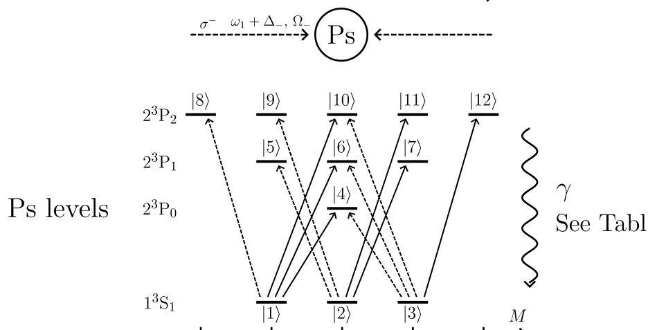
<figcaption class="paper-figure-caption"><b>Fig 1.</b> Figure 2: Level couplings between quantum states of the full Zeeman manifold induced by two laser beams along the atomic quantization axis. We assume a strong far red detuned plane running wave laser beam opposing the Ps beam and a second standing wave field closer to resonance. The first has σ+ polarisation, detuning ∆+ from the transition frequency ω1 with Rabi frequency Ω+, while the second is σ−polarized at detuning ∆−and amplitude Ω−.</figcaption>
</figure>
<figure class="paper-figure-card">
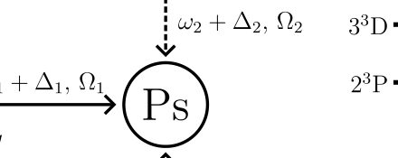
<figcaption class="paper-figure-caption"><b>Fig 2.</b> Figure 3: Geometry of the effective bichromatic three-level 2D cooling scheme with a Gaus- sian slowing beam of width w1 pointing against the Ps source at detuning ∆1 and with Rabi frequency Ω1 on the lower transition and a transverse plane standing wave cooling laser at detuning ∆2 from frequency from the upper transition with amplitude Ω2.</figcaption>
</figure>
<figure class="paper-figure-card">
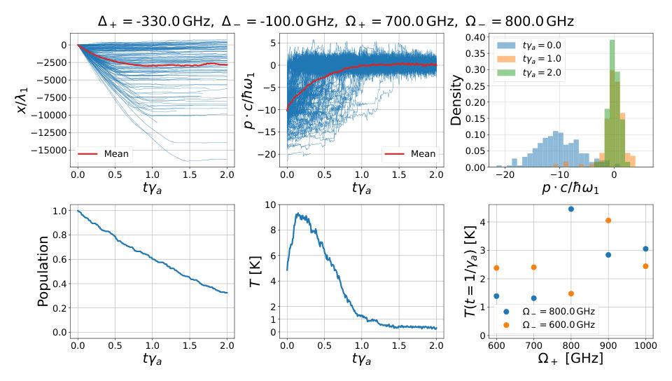
<figcaption class="paper-figure-caption"><b>Fig 3.</b> Figure 4: Time evolution of atomic positions (top left), momenta (top centre), the momentum distribution (top right), fraction of non-annihilated atoms (bottom left), and temperature as defined in Eq. (21) (bottom centre) for laser parameters from Eq. (22). This choice resulted in the lowest achieved temperature (0.22 K) for the one-dimensional case. We also highlighted the temperature after one lifetime (bottom right) for various Ω+ and Ω−values while keeping the detunings the same.</figcaption>
</figure>
<figure class="paper-figure-card">
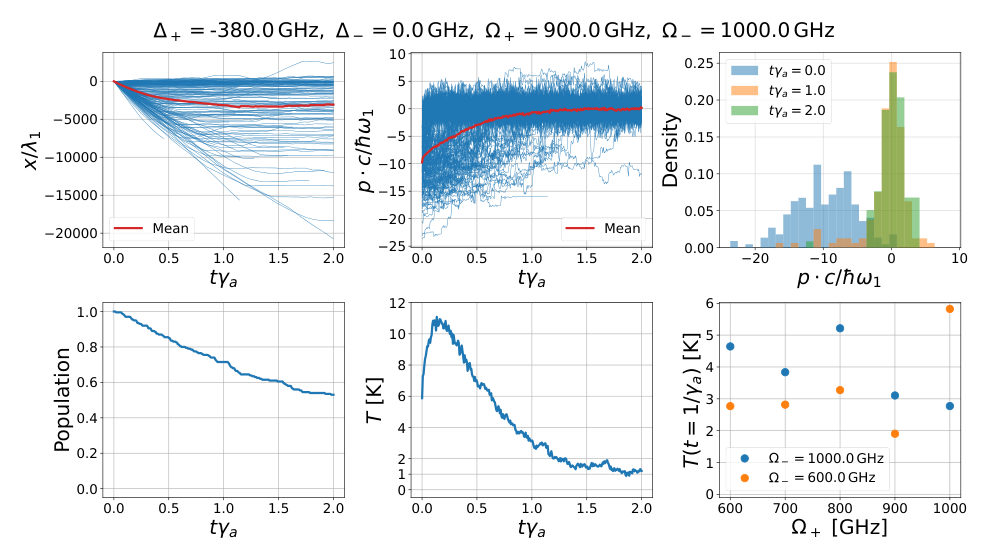
<figcaption class="paper-figure-caption"><b>Fig 4.</b> Figure 5: Same as in the above Figure 4 with laser parameters (23). These parameters yield the highest number of non-annihilated cold atoms at the end of the simulation (53%).</figcaption>
</figure>
<figure class="paper-figure-card">
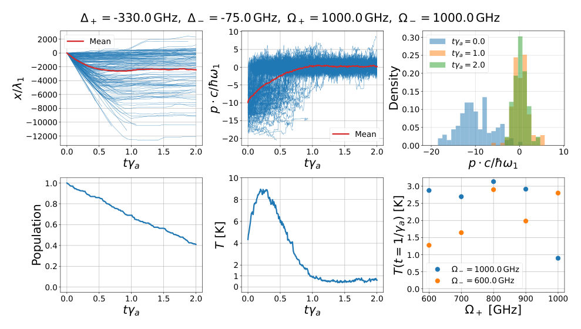
<figcaption class="paper-figure-caption"><b>Fig 5.</b> Figure 6: Position and momentum time evolution as in Figure 4 during the cooling pulse with laser parameters (24). These parameters yield the highest number of surviving Ps atoms at a temperature of T &lt; 1 K (69%) for the one-dimensional case.</figcaption>
</figure>
</div>

<p><strong>Summary.</strong> This paper presents detailed numerical simulations on cooling and trapping fast ortho-positronium atoms using laser cooling techniques. By modeling the system's quantum evolution via the master equation, the authors demonstrate that simultaneous deceleration, cooling, and trapping are highly feasible with current technology. The results pave the way for creating ultra-cold Ps ensembles for advanced quantum physics experiments.</p>
<p><strong>Why it may be interesting.</strong> This work tackles the complex open quantum system dynamics of a purely leptonic system (Ps) under strong laser fields, providing detailed numerical protocols for achieving ultra-cold quantum states relevant for fundamental QED tests.</p>
<details>
<summary>Detailed structure</summary>
<p><strong>Main problem.</strong> The study numerically investigates the laser deceleration, cooling, and trapping of fast ortho-positronium (Ps) bunches.</p>
<p><strong>Main result.</strong> The authors confirm very good prospects for simultaneously achieving deceleration, cooling, and optical trapping of Ps atoms using standard Doppler cooling geometries, even incorporating higher transitions.</p>
<p><strong>Method.</strong> The research employs advanced numerical simulations solving the Lindblad master equation using a semi-classical approach and Monte Carlo wave function simulation (MCWFS).</p>
<p><strong>Model / system.</strong> The system is ortho-positronium (o-Ps), a pure QED object, whose evolution is modeled using the Lindblad master equation. The simulation incorporates the full Zeeman manifold and extends to include higher transitions ($2^3P-3^3D$).</p>
<p><strong>Key observables.</strong> Final kinetic temperature, fraction of non-annihilated atoms, and the time evolution of momentum and density.</p>
<p><strong>Important parameters / regimes.</strong> Laser pulse energies ($ ext{mJ}$), durations ($\approx 100     ext{ ns}$), and specific detunings/Rabi frequencies for the transitions.</p>
<p><strong>Assumptions / limitations.</strong> The analysis uses a semi-classical description for atomic motion and assumes the initial source is a fast, hot cloud of Ps atoms.</p>
<p><strong>Figures summary.</strong> Figures illustrate the quantum states of the Zeeman manifold and show the time evolution of physical parameters, comparing results from running-wave versus standing-wave laser fields.</p>
<p><strong>Paper structure.</strong> The paper progresses from establishing the theoretical framework (master equation, semi-classical force) to presenting extended numerical studies confirming feasibility, and finally discussing future enhancements using optical cavities.</p>
</details>
<details>
<summary>Abstract</summary>
<p>We numerically study laser deceleration, cooling and trapping of host fast ortho-positronium (Ps) bunches as produced in silica microchannel targets using positron bunches from a Surko trap. While Doppler laser cooling routinely allows to cool neutral atom species below milli-Kelvin kinetic temperatures, the fast ground state annihilation and the high recoil shift to line-width ratio in Ps pose new challenging limitations on timing and the required laser power. Earlier theoretical work and first experiments already exhibit viable prospects for radiation pressure cooling to create unprecedented cold and dense Ps ensembles. Our extended numerical studies confirm very good prospects to simultaneously decelerate, cool and optically trap Ps atoms in a standard Doppler cooling geometry on the $1^3\mathrm{S}$--$2^3\mathrm{P}$ transition. Including the full Zeeman state manifolds and adding additional transverse lasers on the $2^3\mathrm{P}$--$3^3\mathrm{D}$ transition improves timing and final temperature to allow for optical trapping at the end. The required laser powers and geometry parameters to implement effective slowing and trapping within a time frame, where the majority of atoms is not annihilated, is in reach of current technology of $\mathrm{mJ}$ energy pulses of approximately $100\ \mathrm{ns}$ duration. Future extensions to collectively enhance cooling and trapping in optical cavities or hollow-core fibres should finally allow fast preparation of ultra-cold Ps systems as future basis of superradiant lasing and Bose--Einstein condensates.</p>
</details>
<p><sub><a href="#top">↑ back to top</a></sub></p>

<p><a id="paper-2609.34623"></a></p>
<h3 id="trotterisation-thresholds-and-dissipative-quantum-chaos-in-open-system-digital-quantum-simulation"><a href="http://arxiv.org/abs/2609.34623v1">Trotterisation Thresholds and Dissipative Quantum Chaos in Open-System Digital Quantum Simulation</a></h3>
<p><strong>Authors:</strong> Angsar Manatuly, Lukas M. Sieberer, Cahit Kargi, Nathan K. Langford<br>
<strong>Type:</strong> theory · <strong>Category:</strong> other · <strong>PDF:</strong> <a href="https://arxiv.org/pdf/2609.34623v1">https://arxiv.org/pdf/2609.34623v1</a><br>
<strong>Analysis basis:</strong> full PDF text, analyzed in chunks
<strong>Topic relevance:</strong> 🔥 <code>driven-dissipative phase transition</code> <strong>4/5</strong> · 🔥 <code>methods for driven-dissipative</code> <strong>4/5</strong> · <code>analog quantum simulation</code> <strong>3/5</strong> · <code>correlated / nonlocal dissipation</code> <strong>3/5</strong> · <code>non-equilibrium universality</code> <strong>3/5</strong> · <code>Keldysh / 2PI / non-Gaussian methods</code> <strong>1/5</strong> · <code>quantum measurements</code> <strong>1/5</strong></p>
<div class="figure-strip-hint">↔ Scroll figures horizontally</div>
<div class="paper-figures-scroll">
<figure class="paper-figure-card">
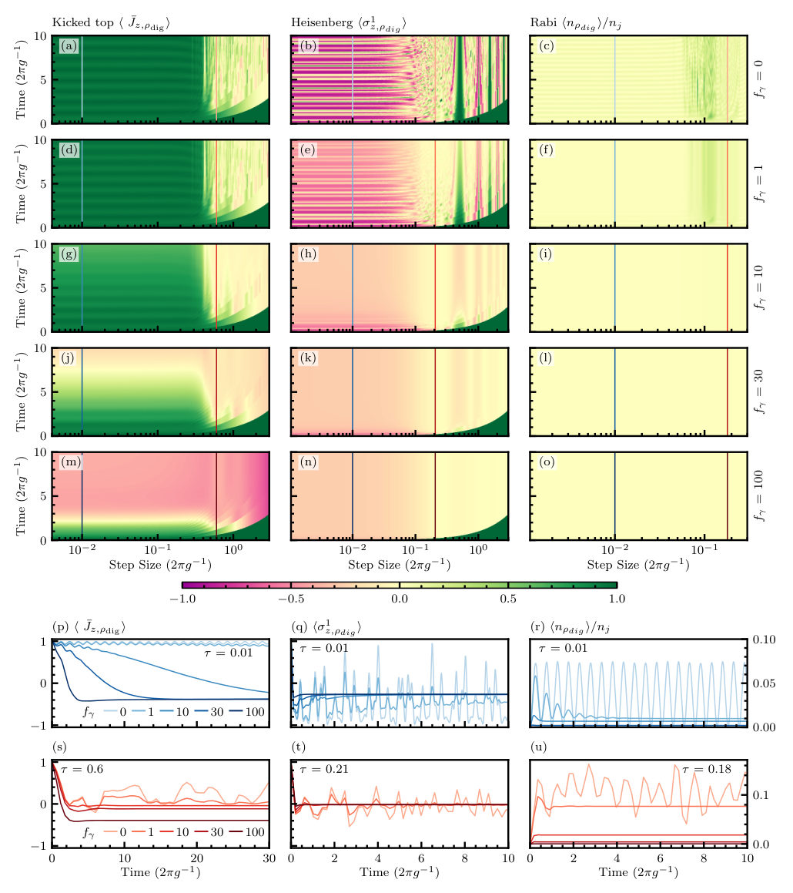
<figcaption class="paper-figure-caption"><b>Fig 1.</b> FIG. 1. Time-evolution of local observable expectation values in open-system DQS for the kicked top (with j = 10), Heisenberg (chain of N = 5 qubits), and Rabi (with cavity truncation dimension dimc = 20) models, corresponding to the first, second, and third columns, with the corresponding local observables magnetisation ⟨¯Jz⟩= 1</figcaption>
</figure>
<figure class="paper-figure-card">
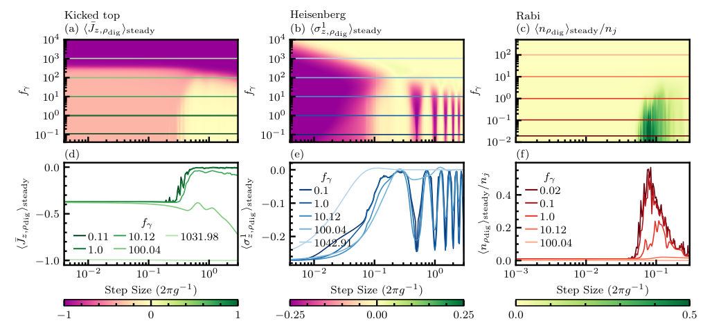
<figcaption class="paper-figure-caption"><b>Fig 2.</b> FIG. 2. Steady-state values of local observable expectation values in open-system DQS for the Kicked top, Heisenberg, and Rabi models with the same parameters as in Fig. 1, corresponding to the first, second, and third columns, with the corresponding local observables magnetisation ⟨¯Jz⟩= 1</figcaption>
</figure>
<figure class="paper-figure-card">
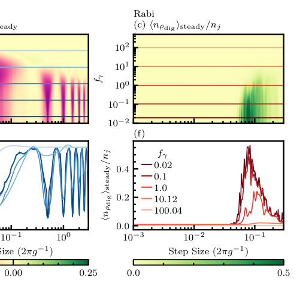
<figcaption class="paper-figure-caption"><b>Fig 3.</b> Figure 3 shows the illustrative example comparing the fidelity of the open-system DQS with respect to the open- and closed-system target dynamics. The presence of dis- sipation unsurprisingly causes rapid decay in fidelity rela- tive to a unitary target model, which simply reflects the usual challenges associated with simulating closed-system dynamics using a real-world quantum processor affected</figcaption>
</figure>
<figure class="paper-figure-card">
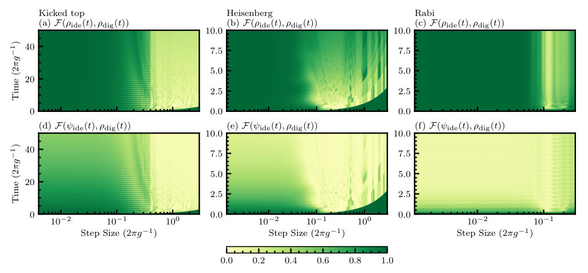
<figcaption class="paper-figure-caption"><b>Fig 4.</b> FIG. 3. Comparison of simulation fidelities of the open-system DQS with respect to the open-system target dynamics and the closed-system target dynamics. The subscripts ide and dig denote the ideal and digital evolutions, respectively. Panels (a–c) show the simulation fidelity F(ρide(t), ρdig(t)) between the open-system target dynamics and the open-system DQS, while panels (d–f) show the simulation fidelity F(ψide(t), ρdig(t)) between the closed-system target dynamics and the open-system DQS. The columns correspond, from left to right, to the kicked top, Heisenberg, and Rabi models with the same parameters as in Fig. 1. For all open system models, the dissipation rate scaling factor is fγ =...</figcaption>
</figure>
<figure class="paper-figure-card">
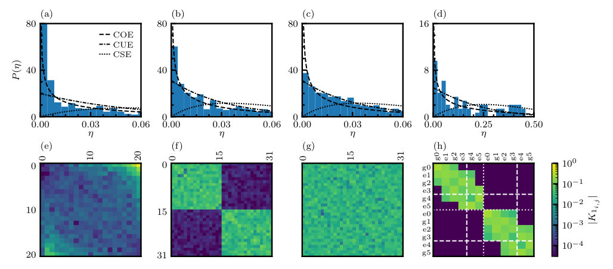
<figcaption class="paper-figure-caption"><b>Fig 5.</b> FIG. 4. Example K1 Kraus operators and their eigenvector statistics illustrating the different symmetries which arise in each open-system model. (a–d) Eigenvector statistics histograms for the (dominant) K1 Kraus operators compared against COE and CUE distributions, for the Trotterised (a) kicked-top model with τ = 0.5 and fγ = 1; (b, c) Heisenberg model with τ = 0.2 and fγ = 1; and (d) Rabi model with τ = 0.1 and fγ = 0.1. (e) Matrix elements of the dominant Kraus operator K1 of the Kicked top model in the computational basis. (f),(g) Matrix elements of the dominant Kraus operator K1 of the Heisenberg model in two different bases. (h) Matrix elements of the dominant Kraus operator K1 of...</figcaption>
</figure>
</div>

<p><strong>Summary.</strong> This paper analyzes how the breakdown of quantum simulation accuracy, known as the Trotterisation threshold, behaves when environmental noise and decoherence are present. Using three distinct physical models, the authors demonstrate that this threshold persists even in the steady state, confirming that the underlying unitary chaos dictates the simulation limit. They introduce RMT techniques to characterize the emergence of genuinely dissipative quantum chaos.</p>
<p><strong>Why it may be interesting.</strong> This work is highly relevant as it bridges the gap between idealized closed-system quantum chaos theory and realistic open quantum systems, providing crucial diagnostics for assessing the feasibility of quantum simulation in noisy environments.</p>
<details>
<summary>Detailed structure</summary>
<p><strong>Main problem.</strong> The paper investigates the persistence and nature of the 'Trotterisation threshold' in Digital Quantum Simulation (DQS) when open-system effects (environmental noise and decoherence) are included, and characterizes the emergence of quantum chaos in these open systems.</p>
<p><strong>Main result.</strong> The Trotterisation threshold persists even in the long-time, steady-state limit of open systems, and dissipative quantum chaos emerges when dissipation balances underlying unitary quantum chaos.</p>
<p><strong>Method.</strong> The authors use open-system DQS applied to three models, characterizing chaos using new statistical techniques based on Random Matrix Theory (RMT) applied to both unitary and dissipative regimes.</p>
<p><strong>Model / system.</strong> The study examines open-system quantum simulators using the Lindblad master equation, applied to paradigmatic models including the quantum kicked top, the nearest-neighbour Heisenberg spin chain, and the Rabi model.</p>
<p><strong>Key observables.</strong> Spin magnetization ($\langlear{J}_z
angle$), qubit polarization ($\langle\sigma_1^z
angle$), normalized photon number ($\langle n
angle/n_j$), and simulation fidelity ($F$).</p>
<p><strong>Important parameters / regimes.</strong> Trotter step size ($    au$), dissipation rates ($\gamma_k$), and the dissipation scaling factor ($f_\gamma$).</p>
<p><strong>Assumptions / limitations.</strong> The analysis relies on the Markovian dissipation approximation, and the threshold behavior is analyzed across varying dissipation strengths.</p>
<p><strong>Figures summary.</strong> Figures show time evolution of observables and fidelity for the three models across varying dissipation strengths and Trotter step sizes, demonstrating the threshold's persistence in both time and steady-state regimes.</p>
<p><strong>Paper structure.</strong> The paper systematically analyzes the DQS of three open systems, first establishing the persistence of the threshold in time-domain observables, then confirming this in steady-state fidelity measurements, and finally detailing the conditions for dissipative quantum chaos.</p>
</details>
<details>
<summary>Abstract</summary>
<p>Digital quantum simulation (DQS) is one of the most promising applications of quantum computing. Trotterised DQS models quantum dynamics by decomposing the evolution into a sequence of gate-based Trotter steps. Using larger Trotter steps reduces the required gate count, but it is now understood that the Trotterisation step size cannot be increased beyond a certain threshold value, beyond which there is a sudden breakdown in simulation accuracy, due to the onset of quantum chaos. To date, this behaviour has only been studied for closed systems not subjected to the environmental noise and decoherence to which real-world quantum computers are highly sensitive. In this work, we study a range of experimentally relevant open-system quantum simulator models and show that Trotterisation thresholds persist even when open-system effects are included, even in the long-time, steady-state limit, once all coherence has been lost. We show that open DQS can accurately reproduce the dynamics of open target systems prior to the threshold, but still exhibits a sudden performance breakdown beyond it. We introduce new, statistical techniques to rigorously characterise the onset of quantum chaos beyond the Trotterisation threshold for both approximately unitary and genuine dissipative quantum chaos, based on random matrix theory (RMT), building on techniques developed for closed systems. Finally, we demonstrate that dissipative quantum chaos emerges when the dissipation is in balance with the presence of underlying unitary quantum chaos; the dissipation must be strong enough to induce genuinely dissipative behaviour, yet not so strong as to suppress the underlying chaotic structure.</p>
</details>
<p><sub><a href="#top">↑ back to top</a></sub></p>

<p><a id="paper-2609.35498"></a></p>
<h3 id="electron-decoherence-in-cylindrical-holes-and-circular-apertures"><a href="http://arxiv.org/abs/2609.35498v1">Electron decoherence in cylindrical holes and circular apertures</a></h3>
<p><strong>Authors:</strong> Cruz I. Velasco, F. Javier García de Abajo<br>
<strong>Type:</strong> theory · <strong>Category:</strong> other · <strong>PDF:</strong> <a href="https://arxiv.org/pdf/2609.35498v1">https://arxiv.org/pdf/2609.35498v1</a><br>
<strong>Analysis basis:</strong> full PDF text, analyzed in chunks
<strong>Topic relevance:</strong> 🔥 <code>interference shaping light</code> <strong>4/5</strong> · <code>Keldysh / 2PI / non-Gaussian methods</code> <strong>3/5</strong> · <code>correlated / nonlocal dissipation</code> <strong>3/5</strong> · <code>driven-dissipative phase transition</code> <strong>2/5</strong> · <code>methods for driven-dissipative</code> <strong>2/5</strong> · <code>quantum measurements</code> <strong>2/5</strong> · <code>non-equilibrium universality</code> <strong>1/5</strong></p>
<div class="figure-strip-hint">↔ Scroll figures horizontally</div>
<div class="paper-figures-scroll">
<figure class="paper-figure-card">
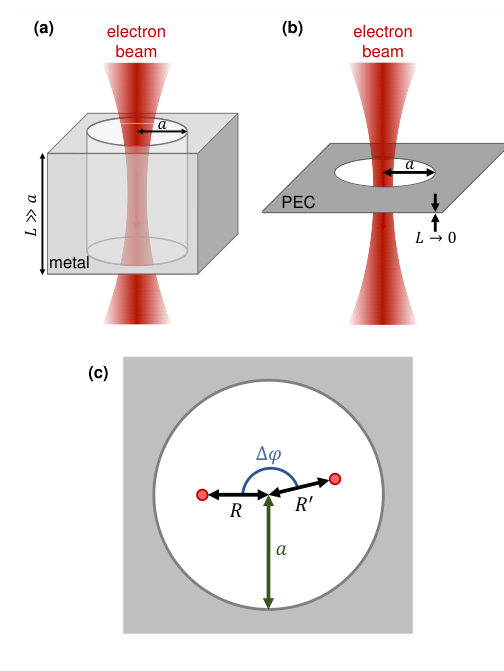
<figcaption class="paper-figure-caption"><b>Fig 1.</b> FIG. 1. Physical systems under consideration. (a) Elec- tron beam propagating through a cylindrical hole of radius a and length L ≫a, drilled in a metallic material of permit- tivity ϵ(ω). (b) Electron beam traversing a circular aperture of radius a in a thin perfectly conducting (PEC) film, corre- sponding to the limit L →0. (c) Top view of an e-beam pre- pared in a two-path superposition within a hole or aperture of radius a. The two point-like paths are located at trans- verse positions R = (R, φ) and R′ = (R′, φ′), with relative azimuthal separation ∆φ = φ −φ′.</figcaption>
</figure>
<figure class="paper-figure-card">
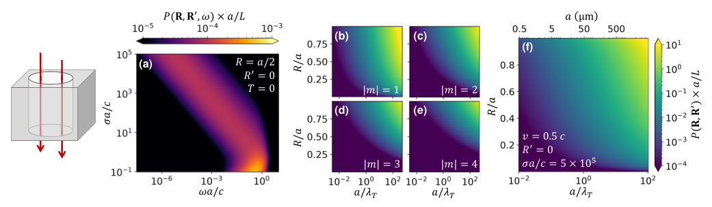
<figcaption class="paper-figure-caption"><b>Fig 2.</b> FIG. 2. Decoherence in a cylindrical hole. (a) Spectral density of the decoherence probability for a two-path electron traversing a cylindrical hole drilled through a metallic slab of dc conductivity σ [see Fig. 1(a,c)], plotted as a function of frequency ω and σ, both normalized by c/a, for R = a/2, R′ = 0, and T = 0. (b) Contribution of the azimuthal modes with |m| = 1 to the decoherence probability for v = 0.5 c, R′ = 0, and σa/c = 5 × 105, shown as a function of the hole radius normalized to the thermal wavelength λT = 2πℏc/kBT. (c–e) Same as (b), but for |m| = 2, |m| = 3, and |m| = 4, respectively. (f) Total decoherence probability obtained by summing over all m. The upper horizontal...</figcaption>
</figure>
<figure class="paper-figure-card">
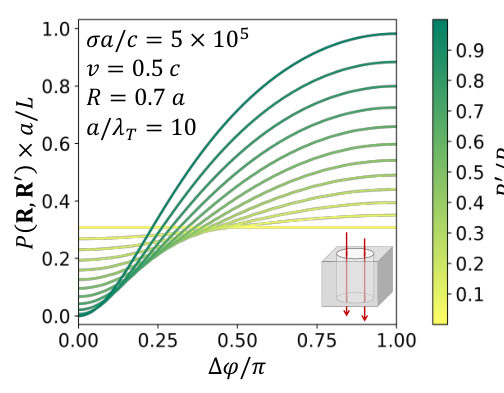
<figcaption class="paper-figure-caption"><b>Fig 3.</b> FIG. 3. Angular dependence of the decoherence prob- ability. Decoherence probability, normalized by the hole length-to-radius ratio L/a (i.e., P × a/L), for electron paths located at polar coordinates (R, φ) and (R′, φ′) [see Fig. 1(c)], plotted as a function of their relative azimuthal separation ∆φ = φ−φ′. Results are shown for v = 0.5 c, σa/c = 5×105, a/λT = 10, R = 0.7 a, and several values of the R′/R ratio (see color scale).</figcaption>
</figure>
<figure class="paper-figure-card">
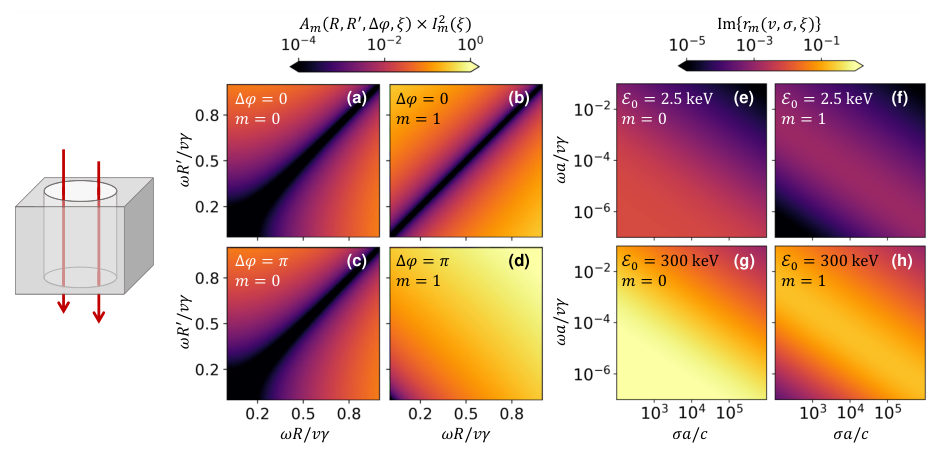
<figcaption class="paper-figure-caption"><b>Fig 4.</b> FIG. 4. Radial dependence of the decoherence probability. (a-d) Position- and frequency-dependent factor Am(R, R′, ∆φ, ξ) [Eq. (12)], normalized by I2 m(ξ) and plotted as a function of ξR/a = ωR/vγ and ξR′/a = ωR′/vγ for m = 0, 1 and ∆φ = 0, π. (e–h) Material-dependent contribution Im{rm(v, σ, ξ)} of the internal-hole reflection coefficient [Eq. (10)], which enters the integrand of Eq. (11), plotted as a function of ξ = ωa/vγ and σa/c for m = 0, 1 and electron kinetic energies E0 = 2.5 and 300 keV.</figcaption>
</figure>
<figure class="paper-figure-card">
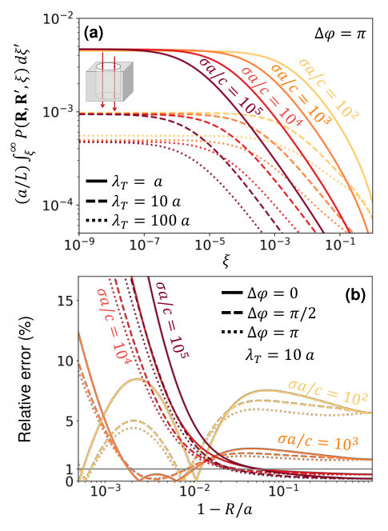
<figcaption class="paper-figure-caption"><b>Fig 5.</b> FIG. 5. Low-frequency, high-conductivity limit. (a) Cumulative frequency integral of the decoherence- probability spectral density, (a/L) R ∞</figcaption>
</figure>
</div>

<p><strong>Summary.</strong> This paper develops a quantitative theory to calculate electron decoherence when an electron passes through nanoscale apertures or holes. By using advanced electromagnetic techniques, the authors derive expressions for decoherence probability in both cylindrical and circular geometries. The findings are crucial for designing next-generation coherent electron-beam instruments by quantifying how environmental coupling limits imaging resolution.</p>
<p><strong>Why it may be interesting.</strong> The rigorous treatment of decoherence using full electromagnetic response and retardation is highly relevant to open quantum systems, particularly those involving nanoscale confinement or structured environments where environmental coupling is critical.</p>
<details>
<summary>Detailed structure</summary>
<p><strong>Main problem.</strong> The paper addresses how electron decoherence, caused by interaction with the environment, fundamentally limits the resolution and contrast in phase-sensitive electron microscopy.</p>
<p><strong>Main result.</strong> The authors derived quantitative theories for decoherence in cylindrical holes and circular apertures, finding that for large holes, decoherence can dominate spatial broadening, necessitating its inclusion in instrument design.</p>
<p><strong>Method.</strong> The methodology combines an electromagnetic Green-tensor formulation with the fluctuation-dissipation theorem, fully retaining retardation effects to calculate the decoherence probability and elastic phase.</p>
<p><strong>Model / system.</strong> The study models electron wave propagation through two canonical geometries: a cylindrical hole drilled through a metal and a circular aperture in a thin conducting film. The interaction is treated via the minimal-coupling Hamiltonian.</p>
<p><strong>Key observables.</strong> Decoherence probability ($P$), elastic phase ($\chi$), and the resulting visibility of interference patterns.</p>
<p><strong>Important parameters / regimes.</strong> Temperature ($T$), conductivity ($\sigma$), aperture radius ($a$), and the electron trajectory position.</p>
<p><strong>Assumptions / limitations.</strong> The analysis uses the nonrecoil approximation and assumes the environment is in thermal equilibrium. Previous work often failed to account for full retardation or curved boundaries.</p>
<p><strong>Figures summary.</strong> Figures illustrate the physical setups (cylindrical hole vs. aperture) and show how decoherence probability varies with temperature and path separation, comparing full calculations against simplified approximations.</p>
<p><strong>Paper structure.</strong> The paper develops a quantitative theory by first establishing the Green-tensor framework, then deriving specific closed-form expressions for the cylindrical hole and the circular aperture, and finally comparing the resulting decoherence effects.</p>
</details>
<details>
<summary>Abstract</summary>
<p>The coherence of free electrons sets fundamental limits on the resolution and contrast of phase-sensitive electron microscopy because coherence is lost whenever the electron leaves a distinguishing excitation in its environment. We develop a quantitative theory of fast-electron decoherence in two canonical geometries: a cylindrical hole drilled through a realistic metal and a circular aperture in a thin perfectly conducting film. By combining an electromagnetic Green-tensor formulation with the fluctuation--dissipation theorem while fully retaining retardation, we obtain the decoherence probability and elastic phase as functions of the electron trajectory, temperature, and material response. For the cylindrical hole, we obtain a closed-form, azimuthally resolved expression that separates the dependences on path position, temperature, and conductivity. In the high-conductivity and high-temperature limits, this result reduces to a universal expression that is linear in temperature and independent of both conductivity and electron velocity. For the circular aperture, which we solve using a cylindrical-wave modal expansion, the energy-loss probability diverges as $1/ω$ at low frequency, whereas the decoherence probability remains finite and reaches a maximum when the aperture radius is comparable to the relevant electromagnetic wavelength. Because the interaction is spatially localized, aperture-induced decoherence is generally weaker than that produced by a cylindrical hole, except for sufficiently large apertures at high temperature. Finally, we show that, for sufficiently large holes, decoherence can dominate the spatial broadening of a focused electron probe and must therefore be incorporated into the design of coherent electron-beam instruments.</p>
</details>
<p><sub><a href="#top">↑ back to top</a></sub></p>

<p><a id="paper-2609.33724"></a></p>
<h3 id="quantum-dynamics-of-full-counting-statistics-in-fermionic-lattices-with-localized-gain"><a href="http://arxiv.org/abs/2609.33724v1">Quantum Dynamics of Full Counting Statistics in Fermionic Lattices with Localized Gain</a></h3>
<p><strong>Authors:</strong> Bijay Kumar Agarwalla, Manas Kulkarni<br>
<strong>Type:</strong> theory · <strong>Category:</strong> statistical mechanics · <strong>PDF:</strong> <a href="https://arxiv.org/pdf/2609.33724v1">https://arxiv.org/pdf/2609.33724v1</a><br>
<strong>Analysis basis:</strong> full PDF text, analyzed in chunks
<strong>Topic relevance:</strong> 🔥 <code>Full counting statistics</code> <strong>4/5</strong> · <code>Keldysh / 2PI / non-Gaussian methods</code> <strong>3/5</strong> · <code>driven-dissipative phase transition</code> <strong>2/5</strong> · <code>methods for driven-dissipative</code> <strong>2/5</strong> · <code>non-equilibrium universality</code> <strong>2/5</strong> · <code>quantum measurements</code> <strong>2/5</strong> · <code>analog quantum simulation</code> <strong>1/5</strong> · <code>correlated / nonlocal dissipation</code> <strong>1/5</strong></p>
<div class="figure-strip-hint">↔ Scroll figures horizontally</div>
<div class="paper-figures-scroll">
<figure class="paper-figure-card">
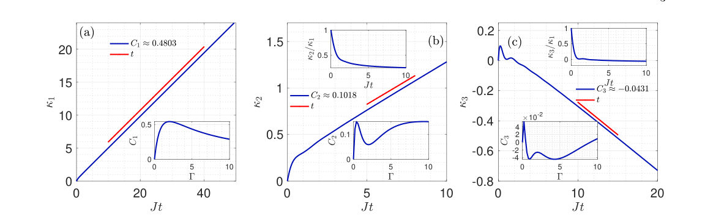
<figcaption class="paper-figure-caption"><b>Fig 1.</b> FIG. 1. Time dependence of the first three cumulants: (a) κ1, (b) κ2, and (c) κ3 for the non-interacting tight binding lattice described by the Hamiltonian in Eq. (36) with α →∞. The cumulants are obtained from the cumulant generating function in Eq. (4) and using Eq. (5). At short times, all cumulants increase linearly with a common rate Γ, as clearly seen in the insets (upper) of (b) and (c). In the long-time limit, the cumulants continue to grow linearly, indicating constant asymptotic growth rates κn = Cnt, where n = 1, 2, 3 indicate different cumulants. Both the short and the late time slopes for all the cumulants match perfectly with analytical predictions as given in Eq. (31), and...</figcaption>
</figure>
<figure class="paper-figure-card">
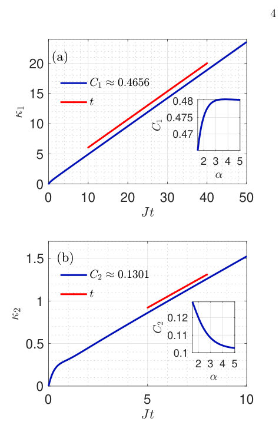
<figcaption class="paper-figure-caption"><b>Fig 2.</b> FIG. 2. Plots for quantum dynamics of particle number growth for first two cumulants: (a) κ1, (b) κ2 for long-range lattice model, described by the Hamiltonian in Eq. (36) with α = 1.5. Similar to Fig. (1) asymptotic linear growth is clearly seen and the corresponding slopes match with analytical pre- dictions given in Eq. (32). The plots in insets of (a) and (b) show the dependence of the asymptotic growth rates C1 and C2, respectively, on long-range hopping exponent α. The approach to the short range limit is clearly seen in these in- sets. The parameters used in the simulation are L = 600, and Γ = 1.</figcaption>
</figure>
</div>

<p><strong>Summary.</strong> This theoretical study analyzes the full counting statistics of fermionic particle number growth in driven quantum lattices. Using the Schwinger-Keldysh formalism, the authors derive the cumulant generating function, showing that the growth rate depends critically on the underlying lattice structure. The results distinguish between linear growth (for delocalized states) and non-linear growth (for localized states), providing a general diagnostic tool for open quantum systems.</p>
<p><strong>Why it may be interesting.</strong> This work provides a powerful, general theoretical framework for characterizing quantum fluctuations and particle transport in open quantum systems, which is highly relevant for understanding energy/particle flow in quantum devices.</p>
<details>
<summary>Detailed structure</summary>
<p><strong>Main problem.</strong> The paper investigates the dynamics of Full Counting Statistics (FCS) for the growth of the total number of fermions in a lattice driven by a localized particle source.</p>
<p><strong>Main result.</strong> For clean lattices with delocalized states, all cumulants grow linearly with time in the long-time limit, while localized states can lead to non-linear growth, such as logarithmic time dependence.</p>
<p><strong>Method.</strong> The analysis employs the Schwinger-Keldysh path integral formalism within the GKSL quantum master equation framework to derive the cumulant generating function.</p>
<p><strong>Model / system.</strong> The system is a one-dimensional non-interacting fermionic lattice subjected to a localized particle gain (source) modeled by the GKSL equation. The Hamiltonian can be generalized to include short- or long-range hopping interactions.</p>
<p><strong>Key observables.</strong> Full Counting Statistics (FCS), characterized by the Cumulant Generating Function (CGF), $\chi(\lambda, t)$, and its cumulants ($\kappa_n$).</p>
<p><strong>Important parameters / regimes.</strong> Localized injection strength ($\Gamma$), time ($t$), and the hopping range exponent ($\alpha$). The analysis distinguishes between the long-time limit (delocalized states) and the presence of localized states.</p>
<p><strong>Assumptions / limitations.</strong> The linear growth result assumes the underlying lattice possesses delocalized single-particle eigenstates and the thermodynamic limit ($L 	o \infty$).</p>
<p><strong>Figures summary.</strong> Figures illustrate the time dependence of the first three cumulants ($\kappa_1, \kappa_2, \kappa_3$), confirming linear growth for delocalized systems and showing $\ln t$ growth for disordered/localized systems.</p>
<p><strong>Paper structure.</strong> The paper develops the theory by first establishing the GKSL framework, then applying the Schwinger-Keldysh path integral formalism to derive the CGF. It analyzes both the short-time and long-time limits, contrasting the linear growth found for clean lattices with the non-linear growth observed when disorder or localization is present.</p>
</details>
<details>
<summary>Abstract</summary>
<p>We investigate the dynamics of full counting statistics (FCS) of the growth of the total number of fermions in a one-dimensional non-interacting lattice subjected to a localized particle gain (source) at one edge. The dynamics of the setup is modeled by the Gorini--Kossakowski--Sudarshan--Lindblad (GKSL) quantum master equation. We recast the counting problem that involves counting particle number at every lattice site to a problem where only the local injected site is involved. We employ the Schwinger-Keldysh path integral formalism within the GKSL framework and derive an analytical expression for the cumulant generating function at arbitrary times and obtain a Levitov-Lesovik type formula in the long-time limit, earlier derived for boundary driven setups in the steady-state. For clean lattices with either short- or long-range hopping, supporting single-particle delocalized eigenstates, we show that all cumulants grow linearly with time in the asymptotic regime. Our analytical results are in excellent agreement with direct numerical simulations. These findings establish a general framework for characterizing FCS and quantum fluctuations in driven open fermionic systems with localized particle injection.</p>
</details>
<p><sub><a href="#top">↑ back to top</a></sub></p>

<p><a id="paper-2609.35702"></a></p>
<h3 id="a-si-on-sic-platform-for-interfacing-with-vanadium-dopants-in-the-telecom-o-band"><a href="http://arxiv.org/abs/2609.35702v1">A Si-on-SiC Platform for Interfacing with Vanadium Dopants in the Telecom O-Band</a></h3>
<p><strong>Authors:</strong> Timothy Draher, Nolan Bitner, Vasileios Niaouris, Claire E. McDermott, David Czaplewski, Supratik Guha, David D. Awschalom, F. Joseph Heremans, Alan M. Dibos<br>
<strong>Type:</strong> experiment · <strong>Category:</strong> quantum information and computing · <strong>PDF:</strong> <a href="https://arxiv.org/pdf/2609.35702v1">https://arxiv.org/pdf/2609.35702v1</a><br>
<strong>Analysis basis:</strong> full PDF text, analyzed in chunks
<strong>Topic relevance:</strong> 🔥 <code>QC/QI experiment</code> <strong>4/5</strong> · 🔥 <code>quantum optics experiment</code> <strong>4/5</strong> · <code>Tavis-Cummings &amp; cavity-many-emitter</code> <strong>2/5</strong> · <code>analog quantum simulation</code> <strong>2/5</strong> · <code>driven-dissipative phase transition</code> <strong>1/5</strong> · <code>interference shaping light</code> <strong>1/5</strong> · <code>methods for driven-dissipative</code> <strong>1/5</strong> · <code>quantum measurements</code> <strong>1/5</strong></p>
<div class="figure-strip-hint">↔ Scroll figures horizontally</div>
<div class="paper-figures-scroll">
<figure class="paper-figure-card">
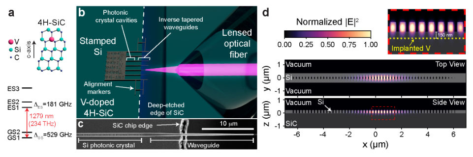
<figcaption class="paper-figure-caption"><b>Fig 1.</b> Figure 1: (a) (Top) Diagram of a vanadium dopant in the 4H -SiC lattice in a quasi-cubic k-site. (Bottom) Simplified energy level diagram for 4H -SiC k-site without an applied magnetic field. (b) Schematic for lensed optical fiber coupling of Si photonic cavities stamped onto the edge of a pedestal etched into the SiC wafer. (c) Scanning electron microscope image of a stamped nanocavity over the SiC pedestal edge. (d) Horizontal (middle) and vertical (bottom) FDTD simulation cross-sections of the normalized electric field intensity ∥E∥2 of the TE-like mode along the center of the 220 nm-thick and 700 nm-wide Si waveguide. The dashed red box (top) highlights the evanescent field intensity...</figcaption>
</figure>
<figure class="paper-figure-card">
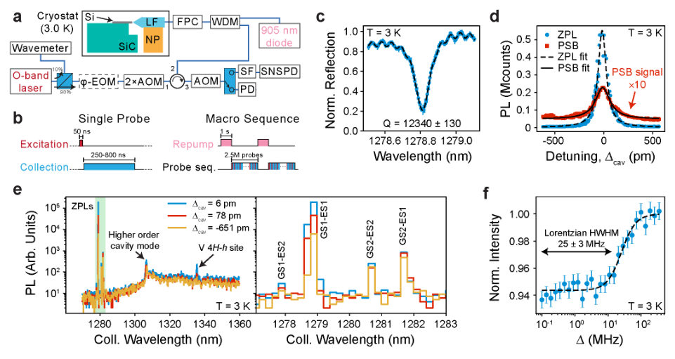
<figcaption class="paper-figure-caption"><b>Fig 2.</b> Figure 2: (a) Simplified experimental configuration utilizing a fiber circulator. A tunable O-band laser in combination with two acousto-optic modulators (AOM) produces short pulses of light. A lensed fiber (LF) on a nanopositioner (NP) couples light to and from the nanocavity inside a cryostat. A wavelength division multiplexer (WDM) is used to inject 905 nm light for V dopant charge state repumping, and a fiber polarization controller (FPC) is used to align the polarization to the nanocavity. A switch directs photons to an InGaAs photodiode (PD) for reflection monitoring or a superconducting nanowire single-photon detector (SNSPD) after a variable spectral filter (SF) chosen for the...</figcaption>
</figure>
<figure class="paper-figure-card">
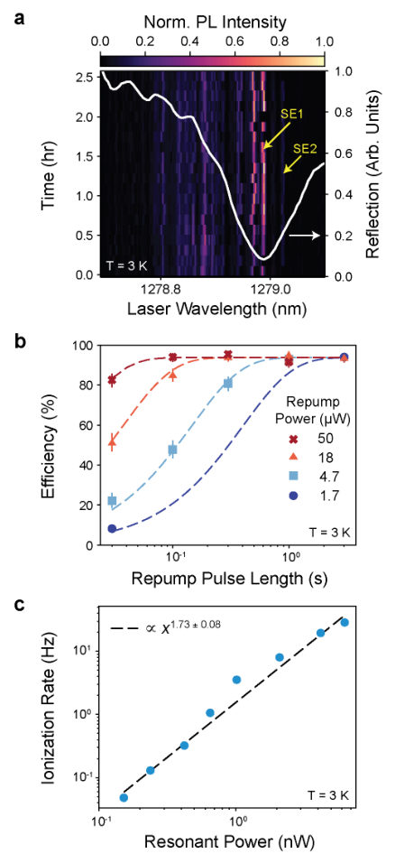
<figcaption class="paper-figure-caption"><b>Fig 3.</b> Figure 3: (a) Time-dependent photoluminescence excitation (PLE) spectroscopy of implanted V dopants coupled to a cav- ity. The normalized reflection spectrum of the cavity is overlaid in white (right axis), and has been tuned to overlap with an iso- lated spectral peak (SE1) at 1278.99 nm. (b) 905 nm repump efficiency as a function of pulse duration and power. The fit lines are a single exponential to the whole dataset using total pulse energy as the only independent variable. The repump efficiency is observed to saturate at 95 %. (c) Measured ion- ization rate of SE1 as a function of the resonant laser power. The dashed line is a power law fit to the ionization rate show- ing superlinear...</figcaption>
</figure>
<figure class="paper-figure-card">
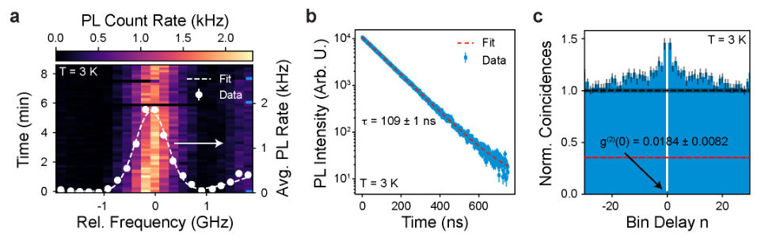
<figcaption class="paper-figure-caption"><b>Fig 4.</b> Figure 4: (a) (Left axis) PLE spectroscopy over time of a single emitter (SE1) resonant with the cavity with intensity displayed in units of photons detected per second of collection time. Blue marks near the right axis indicate instances when a 905 nm repump pulse is applied between scans. (Right axis) An average of the intensity for the entire measurement duration and a Lorentzian fit are overlaid in white. (b) Optical lifetime measurement of SE1 when on resonance with the cavity showing a reduced lifetime relative to bulk emitters due to Purcell enhancement. (c) Pulsed autocorrelation measurement of SE1 confirming that it is a single emitter (reflected about n=0 for clarity). Each bin...</figcaption>
</figure>
</div>

<p><strong>Summary.</strong> This paper introduces a novel Si-on-SiC platform designed to efficiently couple Vanadium color centers in SiC to optical cavities. By integrating silicon nanocavities, the authors overcome the challenge of photon extraction from high-index SiC, enabling high-purity, telecom-wavelength single-photon sources suitable for quantum network applications.</p>
<p><strong>Why it may be interesting.</strong> This work directly addresses the physical realization of solid-state quantum emitters for quantum networking, providing a concrete, scalable platform for coupling quantum information sources to optical fibers.</p>
<details>
<summary>Detailed structure</summary>
<p><strong>Main problem.</strong> The primary challenge is achieving efficient photon extraction from Vanadium color centers embedded in Silicon Carbide (SiC) for use in quantum network nodes operating at the telecom O-band.</p>
<p><strong>Main result.</strong> The authors successfully demonstrated a scalable Si-on-SiC platform that enables efficient zero-phonon line (ZPL) collection, achieving high-purity single-photon emission and Purcell-enhanced lifetimes.</p>
<p><strong>Method.</strong> The research involves heterogeneous integration of silicon nanocavities onto SiC substrates, coupled with time-resolved photoluminescence measurements and charge-state repumping using external lasers.</p>
<p><strong>Model / system.</strong> The system is a Si-on-SiC photonic platform hosting Vanadium ($ ext{V}^{4+}$) color centers in 4H-SiC. The structure couples the emitter's emission to silicon nanocavities to enhance photon collection into the telecom O-band.</p>
<p><strong>Key observables.</strong> Zero-phonon line (ZPL) emission, Purcell-enhanced photoluminescence, single-photon emission purity, and transient spectral hole burning linewidths.</p>
<p><strong>Important parameters / regimes.</strong> Telecom O-band ($   ext{1278–1388 nm}$), Purcell factor ($ ext{F}_{    ext{P}}$), cavity quality factor ($   ext{Q}$), and charge-repump efficiency ($95\%$).</p>
<p><strong>Assumptions / limitations.</strong> The analysis relies on the feasibility of foundry-compatible fabrication processes and the ability to maintain the $ ext{V}^{4+}$ charge state via external repumping.</p>
<p><strong>Figures summary.</strong> Figures illustrate the $   ext{V}$ dopant energy levels in $   ext{SiC}$ and schematics of the optical setup, detailing the coupling mechanism between the nanocavity and the dopants.</p>
<p><strong>Paper structure.</strong> The paper progresses from identifying the fundamental physical challenge (photon extraction from high-index SiC) to proposing the Si-on-SiC heterogeneous platform, demonstrating enhanced ZPL collection in ensembles, and finally isolating and characterizing single emitters.</p>
</details>
<details>
<summary>Abstract</summary>
<p>Vanadium color centers in silicon carbide (SiC) offer telecom O-band emission, sub-microsecond optical lifetimes, and second-scale spin relaxation times, rendering them promising candidates for quantum network nodes. However, efficient photon extraction from the high-refractive-index SiC host remains challenging. Here, we introduce a silicon-on-SiC heterogeneous photonic platform in which silicon nanocavities evanescently couple to shallow vanadium dopants in commercial 4H-SiC, enabling efficient zero-phonon line (ZPL) collection under resonant excitation. In as-grown ensembles, we observe Purcell-enhanced photoluminescence with transient spectral hole burning linewidths of 50 MHz on microsecond timescales. In dilute implanted samples, we isolate individual vanadium centers with high-purity single photon emission and a Purcell-enhanced lifetime of 109 ns. The entire optical interface operates through a single lensed fiber, including a 905 nm repump laser that recovers the vanadium charge state with 95% efficiency. These results establish Si-on-SiC as a scalable, foundry-compatible platform for telecom-wavelength spin-photon interfaces.</p>
</details>
<p><sub><a href="#top">↑ back to top</a></sub></p>

<p><a id="paper-2609.34908"></a></p>
<h3 id="a-projection-operator-approach-for-ultracold-bosons-coupled-to-a-cavity"><a href="http://arxiv.org/abs/2609.34908v1">A projection operator approach for ultracold bosons coupled to a cavity</a></h3>
<p><strong>Authors:</strong> Sarbarish Sen, Bimalendu Deb, K. Sengupta<br>
<strong>Type:</strong> theory · <strong>Category:</strong> other · <strong>PDF:</strong> <a href="https://arxiv.org/pdf/2609.34908v1">https://arxiv.org/pdf/2609.34908v1</a><br>
<strong>Analysis basis:</strong> full PDF text, analyzed in chunks
<strong>Topic relevance:</strong> 🔥 <code>analog quantum simulation</code> <strong>4/5</strong> · <code>Tavis-Cummings &amp; cavity-many-emitter</code> <strong>3/5</strong> · <code>Keldysh / 2PI / non-Gaussian methods</code> <strong>2/5</strong> · <code>driven-dissipative phase transition</code> <strong>2/5</strong> · <code>methods for driven-dissipative</code> <strong>2/5</strong> · <code>non-equilibrium universality</code> <strong>2/5</strong></p>
<div class="figure-strip-hint">↔ Scroll figures horizontally</div>
<div class="paper-figures-scroll">
<figure class="paper-figure-card">
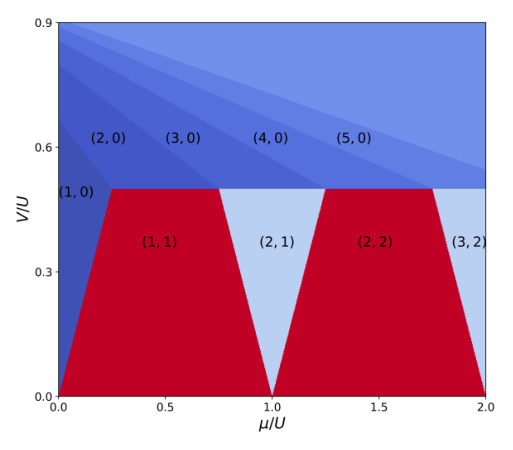
<figcaption class="paper-figure-caption"><b>Fig 1.</b> FIG. 1. Ground state phase diagram of the model in the atomic limit (J/U = 0) as a function of the chemical potential µ/U and the long-range interaction V/U. For V/U ≤1/2, one finds translationally invariant MI phases with nA = nB (red) separated by partially polarized CDW phase with nA−nB = 1 sandwiched between them (light blue). For V/U &gt; 0.5, one finds several fully polarized CDW phases with nB = 0 (dark blue); for these phases δn incoreses with µ/U as shown. The white region indicates instability of the system due to large V/U; see text for details.</figcaption>
</figure>
<figure class="paper-figure-card">
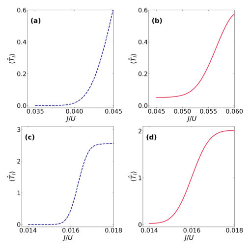
<figcaption class="paper-figure-caption"><b>Fig 2.</b> FIG. 3. Plot for expectation of the kinetic operator ⟨Tl⟩ at the MI obtained using mean-field theory (panel (a), dot- ted lines) and projection operator formalism (panel (b), solid line). (c) and (d) Similar plots for the CDW phase respec- tively. All other parameters are same in Fig. 2. See text for details.</figcaption>
</figure>
<figure class="paper-figure-card">
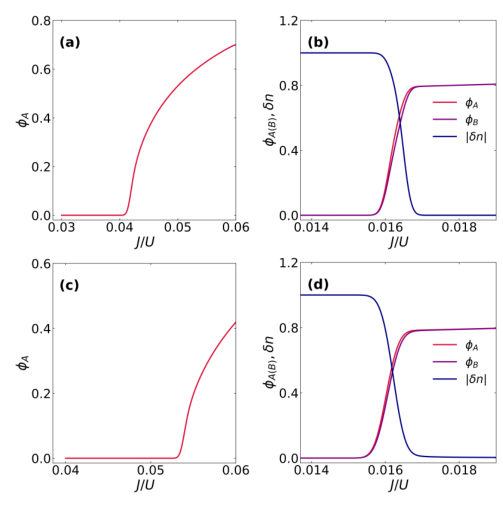
<figcaption class="paper-figure-caption"><b>Fig 3.</b> FIG. 2. (a) Plots of the order parameters ϕA, ϕB, and δn = |⟨nA⟩−⟨nB⟩| as a function of J/U for µ/U = 0.42 obtained using mean-field theory near the peak of the Mott Insulator (MI) lobe where ϕA = ϕB and δn = 0. (b) Similar plot across the tip of the CDW lobe for and µ/U = 0.98. Here δn decreases from 1 to 0 as one moves across the Mott lobe from the Mott to the superfluid phase. In addition, there is a narrow finite region near the tip of the Mott lobe where both δn and ϕA,B are finite indicating possibility of a SS phase. (c) and (d), Same as (a) and (b) but using projection operator technique. These predict a different position of the Mott lobe for the homogeneous MI phase (a); for the...</figcaption>
</figure>
<figure class="paper-figure-card">
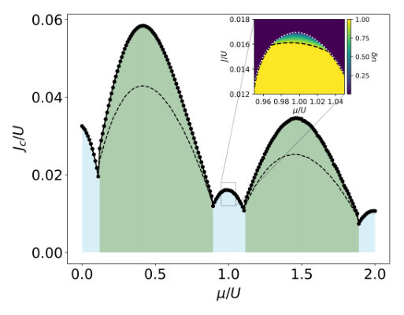
<figcaption class="paper-figure-caption"><b>Fig 4.</b> FIG. 4. The ground state phase boundary separating the compressible (SF or SS) and incompressible (MI or CDW) for long-range interaction V/U = 0.15 as a function of chemical potential µ/U and the critical hopping strength J/U. The black dots indicate data obtained using the projection opera- tor method while the dashed lines indicate those from mean- field theory. The small lobes (blue) indicate CDW phases with nA −nB = 1 while the larger lobes (green) corresponds to nA = nB. The inset shows a close up of the phase diagram obtained using the projection operator method. The black dashed line shows the boundary between the CDW and the SS phase (green region of the inset) where δn and ϕA are...</figcaption>
</figure>
<figure class="paper-figure-card">
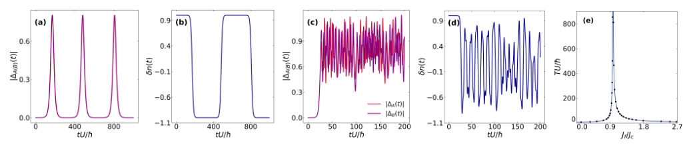
<figcaption class="paper-figure-caption"><b>Fig 5.</b> FIG. 5. (a) Plots of the time evolution of the order parameters |∆A(B)(t)| as a function of tU/ℏfollowing a quench to the tip of the CDW lobe with Jf = 1.02Jc, Ji = 0.01Jc, and µ/U = 0.98. (b) Plot of δn(t) for the same quench as in (a). (c) Same as in (a) but with Jf = 3.51Jc so that the quench takes the system deep inside the SF phase. (d) Plot of δn(t) with all parameters being same as in (c).(e) Plot of the time period of oscillation TU/ℏas a function of Jf/Jc showing enhancement around Jc.</figcaption>
</figure>
</div>

<p><strong>Summary.</strong> This paper analyzes ultracold bosons in a cavity-coupled Bose-Hubbard model using a projection operator technique to account for quantum fluctuations. The study maps out the phase diagram and simulates quench dynamics, demonstrating that quantum fluctuations significantly alter phase boundaries and introduce characteristic single-frequency oscillations near quantum critical points compared to mean-field predictions.</p>
<p><strong>Why it may be interesting.</strong> This work is highly relevant as it tackles the complex interplay between quantum fluctuations, long-range interactions, and non-equilibrium dynamics in systems relevant to quantum simulation using ultracold atoms in optical lattices.</p>
<details>
<summary>Detailed structure</summary>
<p><strong>Main problem.</strong> The study investigates the equilibrium phases and non-equilibrium dynamics of ultracold bosons coupled to a cavity, specifically focusing on the role of short-range quantum fluctuations.</p>
<p><strong>Main result.</strong> Quantum fluctuations significantly modify the phase boundaries between SF, SS, CDW, and MI phases, and the dynamics near the critical point exhibit single-frequency oscillations distinct from mean-field predictions.</p>
<p><strong>Method.</strong> The authors employ a projection operator technique, which systematically eliminates high-energy virtual hopping processes, combined with mean-field theory for the long-range cavity interaction.</p>
<p><strong>Model / system.</strong> The system is modeled by ultracold bosons in a two-dimensional (2D) Bose-Hubbard model coupled to a high-finesse cavity, resulting in an extended Bose-Hubbard model.</p>
<p><strong>Key observables.</strong> Superfluid (SF), Supersolid (SS), Charge-Density-Wave (CDW), and Mott Insulating (MI) phases; time evolution of superfluid order parameters and characteristic oscillation frequencies.</p>
<p><strong>Important parameters / regimes.</strong> Hopping amplitude (J), on-site repulsion (U), cavity-mediated interaction strength (V), and quench/ramp rates.</p>
<p><strong>Assumptions / limitations.</strong> The method captures only short-range quantum fluctuations over mean-field theory and does not capture Kibble-Zurek scaling during ramps across critical points.</p>
<p><strong>Figures summary.</strong> Figures compare the time evolution of the order parameter $|\Delta_A(t)|$ for quenches near the critical point (showing single-frequency oscillations) versus deep in the SF regime (showing multi-frequency dynamics), contrasting the projection operator method with mean-field theory.</p>
<p><strong>Paper structure.</strong> The paper introduces the Hamiltonian and the atomic limit, develops the theoretical framework using the projection operator formalism for the ground state phase diagram, and finally analyzes non-equilibrium dynamics via quench and ramp simulations.</p>
</details>
<details>
<summary>Abstract</summary>
<p>We employ a projection operator technique to study the equilibrium phases and the non-equilibrium quench and ramp dynamics of ultracold bosons described by a two-dimensional (2D) Bose-Hubbard model coupled to a high-finesse cavity with competing local short-range and cavity-mediated long-range interactions. Our analysis relies on a systematic elimination of high-energy virtual hopping processes; this enables us to capture the effects of short-range quantum fluctuations on the phase diagram of the model while treating the cavity-induced long-range interaction within mean-field theory. We find that the phase boundaries between the superfluid (SF), supersolid (SS), charge-density-wave (CDW) and Mott insulating (MI) phases are significantly modified by the presence of these fluctuations. We use this approach to study the dynamics of bosons following a quench/ramp from the CDW to the SS and SF phases; our analysis indicates the presence of oscillatory dynamics characterized by a single frequency due to a quench which takes the system near the critical point. In contrast, for a quench deep inside the SF phase, the dynamics involves multiple frequencies. An explicit comparison with Gutzwiller mean-field theory shows the importance of quantum fluctuations in shaping such post-quench dynamics; this feature may be tested experimentally as we discuss. We also study the ramp dynamics of these bosons and identify a bound on the ramp rate above which the present method is expected to produce accurate results.</p>
</details>
<p><sub><a href="#top">↑ back to top</a></sub></p>

<p><a id="paper-2609.33574"></a></p>
<h3 id="interactions-protect-periodically-driven-time-crystals-against-dephasing-but-destabilise-multipolar-driven-order"><a href="http://arxiv.org/abs/2609.33574v1">Interactions Protect Periodically Driven Time Crystals Against Dephasing but Destabilise Multipolar-Driven Order</a></h3>
<p><strong>Authors:</strong> Karthikeya Machiraju, Kaustav Bhowmick<br>
<strong>Type:</strong> theory · <strong>Category:</strong> disordered systems and neural networks · <strong>PDF:</strong> <a href="https://arxiv.org/pdf/2609.33574v1">https://arxiv.org/pdf/2609.33574v1</a><br>
<strong>Analysis basis:</strong> full PDF text, analyzed in chunks
<strong>Topic relevance:</strong> 🔥 <code>driven-dissipative phase transition</code> <strong>4/5</strong> · <code>analog quantum simulation</code> <strong>3/5</strong> · <code>methods for driven-dissipative</code> <strong>3/5</strong> · <code>non-equilibrium universality</code> <strong>3/5</strong> · <code>correlated / nonlocal dissipation</code> <strong>1/5</strong> · <code>scars &amp; prethermalization</code> <strong>1/5</strong></p>
<div class="figure-strip-hint">↔ Scroll figures horizontally</div>
<div class="paper-figures-scroll">
<figure class="paper-figure-card">
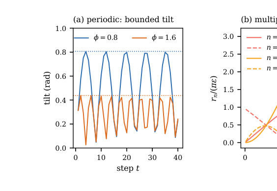
<figcaption class="paper-figure-caption"><b>Fig 1.</b> FIG. 1. The two regimes. (a) Frozen-neighbour tilt of the periodic drive, | P</figcaption>
</figure>
<figure class="paper-figure-card">
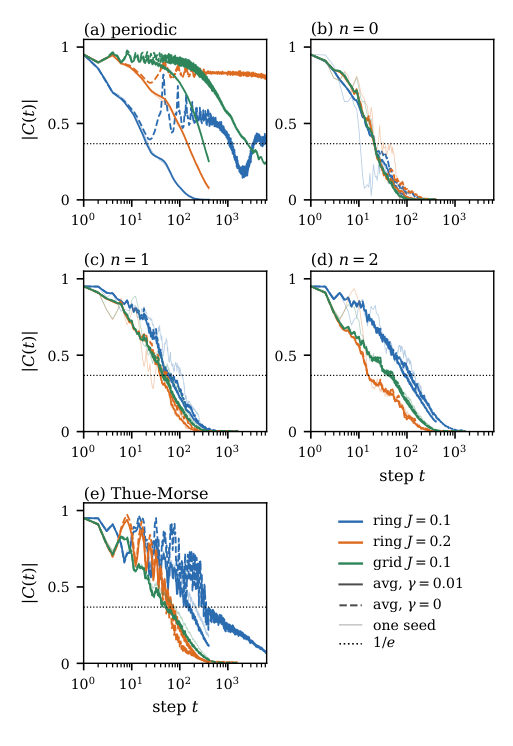
<figcaption class="paper-figure-caption"><b>Fig 2.</b> FIG. 2. Autocorrelation magnitude |C(t)| at N = 12 for the five drives (a to e): seed averages over 16 seeds at γ = 0.01 (solid) and γ = 0 (dashed) for the ring at J = 0.1, the ring at J = 0.2 and the 3 × 4 grid at J = 0.1, and one seed at γ = 0.01 (thin). The γ = 0.01 curves end at the simulation window of the cell. Dotted line: 1/e.</figcaption>
</figure>
<figure class="paper-figure-card">
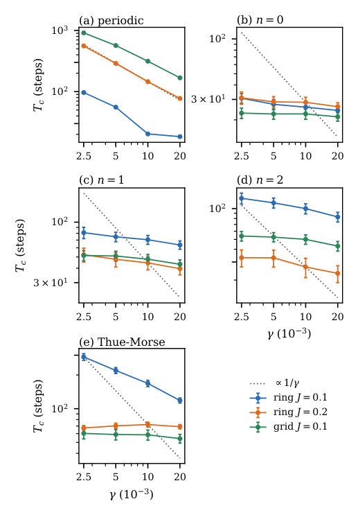
<figcaption class="paper-figure-caption"><b>Fig 3.</b> FIG. 3. Coherence time Tc against the dephasing rate γ at N = 12 for the five drives (a to e), for the ring at J = 0.1, the ring at J = 0.2 and the 3 × 4 grid at J = 0.1 (16 seeds, 30 trajectories; error bars are standard errors). The dotted line is proportional to 1/γ through the ring at J = 0.2 at γ = 0.01.</figcaption>
</figure>
<figure class="paper-figure-card">
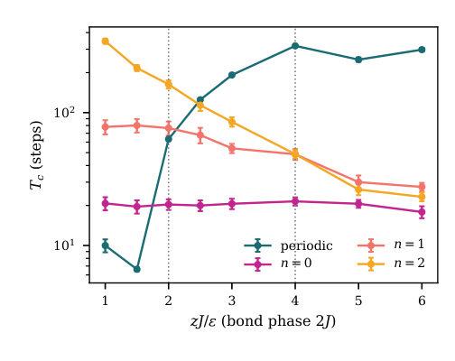
<figcaption class="paper-figure-caption"><b>Fig 4.</b> FIG. 4. Coherence time against the total interaction strength zJ/ε for four drives (N = 12, 3 × 4 grid, γ = 0.01, 16 seeds, 40 trajectories; error bars are standard errors). Dotted lines: zJ/ε = 2 and 4, the values of the ring and the grid at J = 0.1 (the sweep itself is on the 3 × 4 grid).</figcaption>
</figure>
<figure class="paper-figure-card">
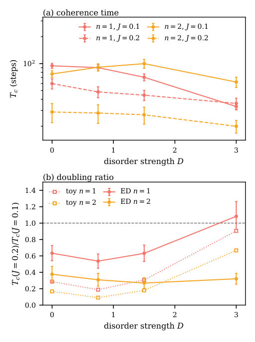
<figcaption class="paper-figure-caption"><b>Fig 5.</b> FIG. 5. Disorder scan on the ring at N = 12, γ = 0.01 (16 seeds). (a) Coherence time for n = 1 and n = 2 at J = 0.1 and J = 0.2. (b) The ratio Tc(J=0.2)/Tc(J=0.1) from ED (filled, standard errors propagated) and from a single-spin toy with the alternating disorder offset (open, a single run without error estimate).</figcaption>
</figure>
</div>

<p><strong>Summary.</strong> This paper analyzes the stability of time-crystal order in a disordered kicked Ising model under various driving protocols. It finds that interactions offer protection against dephasing for periodic drives but destabilize multipolar drives, while also revealing a geometry-dependent 'coordination gain' not predicted by simple tilt measurements. The findings advance understanding of decoherence mechanisms in periodically driven quantum matter.</p>
<p><strong>Why it may be interesting.</strong> This work provides detailed insights into how local disorder and structured interactions compete with environmental decoherence in non-equilibrium quantum many-body systems, which is highly relevant to understanding quantum computation stability.</p>
<details>
<summary>Detailed structure</summary>
<p><strong>Main problem.</strong> The study investigates how different types of interactions affect the coherence time of time-crystal order in periodically driven quantum systems, particularly comparing periodic versus random multipolar drives.</p>
<p><strong>Main result.</strong> Stronger interactions protect time-crystal order against dephasing from periodic drives but destabilize it under random multipolar drives, and coordination effects beyond total interaction strength are measurable.</p>
<p><strong>Method.</strong> The research employs exact diagonalization (ED) simulations and Matrix-Product-State (MPS) time evolution to analyze the dynamics of a disordered kicked Ising model.</p>
<p><strong>Model / system.</strong> The system is a disordered kicked Ising model of spin-1/2 sites, driven by periodic or random multipolar sequences, and subjected to per-site dephasing ($\gamma$).</p>
<p><strong>Key observables.</strong> Coherence time ($T_c$), transverse tilt ($    heta^2_\perp$), and ratios of coherence times across different drive types and lattice geometries.</p>
<p><strong>Important parameters / regimes.</strong> The disorder strength ($D$), the coupling strength ($J$), the dephasing rate ($\gamma$), and the drive order ($n=0, 1, 2$).</p>
<p><strong>Assumptions / limitations.</strong> The initial state is assumed to be fully polarized; the coherence time definition is sensitive, requiring multiple checks for robustness.</p>
<p><strong>Figures summary.</strong> Figures summarize the periodic tilt, block residuals, and measured ratios of coherence times for $N=16$, while tables show disorder scan results for $T_c$ ratios.</p>
<p><strong>Paper structure.</strong> The paper systematically compares the coherence time scaling for periodic drives versus multipolar drives, analyzes the role of geometry (grid vs. ring) at fixed interaction strength, and discusses the underlying 'toggling-frame' picture.</p>
</details>
<details>
<summary>Abstract</summary>
<p>We show that stronger interactions protect periodically driven time-crystal order against dephasing but destabilise order under random multipolar drives, and that coordination matters beyond the total interaction strength. We studied a disordered kicked Ising model of $N=12$ and $16$ spins with imperfect $π$ pulses and per-site dephasing by exact diagonalisation, comparing a periodic drive, random multipolar drives of order $n=0,1,2$ and the Thue-Morse sequence, and separated coupling strength from coordination by comparing a grid with a ring at equal total interaction strength $zJ$. For the periodic drive the coherence time scales approximately as $1/γ$, and stronger coupling reduces the transverse tilt on which dephasing acts. For multipolar drives of order $n\ge1$, doubling the coupling on a ring shortens the coherence time to $0.54$ ($n=1$), $0.37$ ($n=2$) and $0.44$ (Thue-Morse) at $N=16$, while random signs ($n=0$) are unaffected. A disorder scan supports a toggling-frame picture in which interactions spoil the block cancellation of the pulse error. At equal $zJ$ the grid outlives the ring by $2.15$ ($N=12$) and $2.78$ ($N=16$) for the periodic drive despite an identical transverse tilt, a coordination effect beyond this picture. All ratios hold under three definitions of the coherence time.</p>
</details>
<p><sub><a href="#top">↑ back to top</a></sub></p>

<p><a id="paper-2609.32554"></a></p>
<h3 id="wide-mass-scanning-range-setup-and-phase-resolved-protocol-for-axion-dark-matter-detection"><a href="http://arxiv.org/abs/2609.32554v1">Wide-Mass-Scanning-Range Setup and Phase-Resolved Protocol for Axion Dark Matter Detection</a></h3>
<p><strong>Authors:</strong> A. Cottet, T. Kontos<br>
<strong>Type:</strong> theory · <strong>Category:</strong> other · <strong>PDF:</strong> <a href="https://arxiv.org/pdf/2609.32554v1">https://arxiv.org/pdf/2609.32554v1</a><br>
<strong>Analysis basis:</strong> full PDF text, analyzed in chunks
<strong>Topic relevance:</strong> 🔥 <code>Keldysh / 2PI / non-Gaussian methods</code> <strong>4/5</strong> · <code>interference shaping light</code> <strong>3/5</strong> · <code>quantum measurements</code> <strong>3/5</strong> · <code>Tavis-Cummings &amp; cavity-many-emitter</code> <strong>1/5</strong> · <code>analog quantum simulation</code> <strong>1/5</strong> · <code>driven-dissipative phase transition</code> <strong>1/5</strong> · <code>methods for driven-dissipative</code> <strong>1/5</strong> · <code>quantum optics experiment</code> <strong>1/5</strong></p>
<div class="figure-strip-hint">↔ Scroll figures horizontally</div>
<div class="paper-figures-scroll">
<figure class="paper-figure-card">
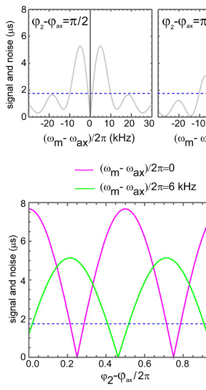
<figcaption class="paper-figure-caption"><b>Fig 1.</b> FIG. 2: Tuning the phase of the phase resolved haloscope. Top panels: Axion</figcaption>
</figure>
<figure class="paper-figure-card">
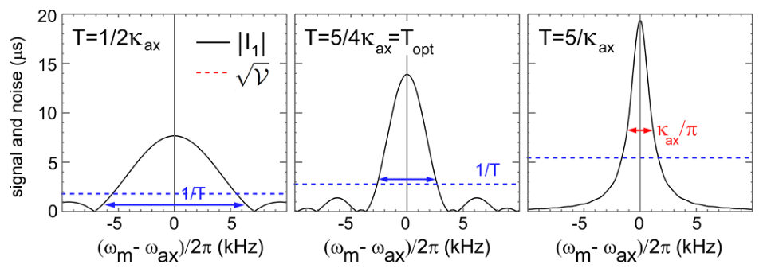
<figcaption class="paper-figure-caption"><b>Fig 2.</b> FIG. 3: Choosing the integration time of the phase resolved haloscope. Axion</figcaption>
</figure>
<figure class="paper-figure-card">
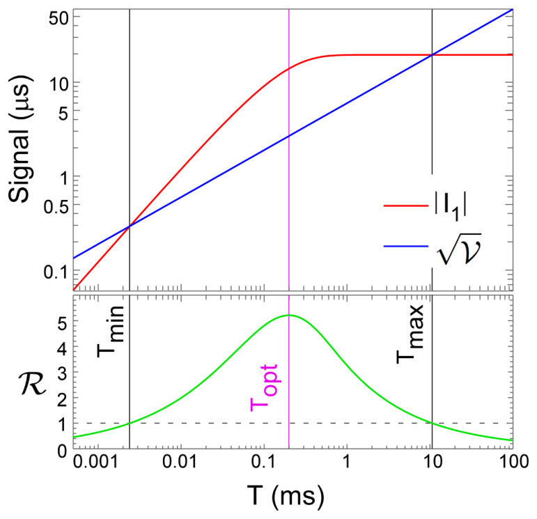
<figcaption class="paper-figure-caption"><b>Fig 3.</b> FIG. 4: Optimum measurement time.. Axion signal I1 (top panel, red curve) square</figcaption>
</figure>
<figure class="paper-figure-card">
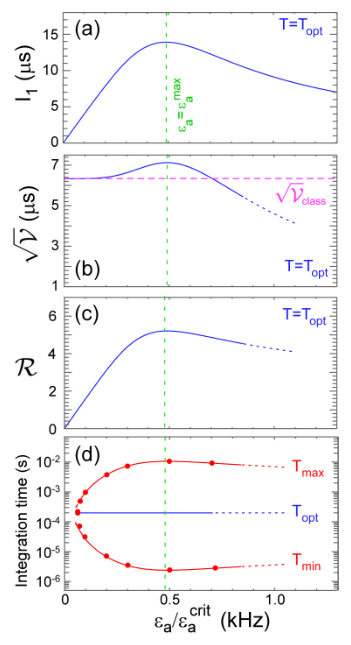
<figcaption class="paper-figure-caption"><b>Fig 4.</b> FIG. 5: Optimum working point. Axion signal I1(panel a), square root of the detector</figcaption>
</figure>
<figure class="paper-figure-card">
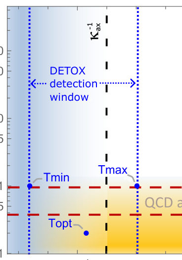
<figcaption class="paper-figure-caption"><b>Fig 5.</b> FIG. 6: State-of-the-Art Haloscope Benchmark</figcaption>
</figure>
</div>

<p><strong>Summary.</strong> This paper proposes a breakthrough detection method for axion dark matter using a phase-resolved haloscope. Instead of measuring excess power, the technique measures the phase shift induced by the axion field via coupling to a tunable gyromagnetic mode. This approach promises significantly enhanced sensitivity and a vastly expanded search range compared to current state-of-the-art detectors.</p>
<p><strong>Why it may be interesting.</strong> This work is highly relevant to quantum optics and open quantum systems as it proposes a novel measurement scheme that moves beyond simple power detection to utilize phase information in a superconducting cavity QED setup.</p>
<details>
<summary>Detailed structure</summary>
<p><strong>Main problem.</strong> The primary goal is to develop a quantum-enhanced, phase-resolved protocol for detecting extremely weak axion dark matter signals, overcoming the limitations of conventional power-measurement haloscopes.</p>
<p><strong>Main result.</strong> The proposed phase-resolved haloscope technique promises improvements of at least 4 orders of magnitude in figure of merit and 2 orders of magnitude in mass window compared to standard haloscopes.</p>
<p><strong>Method.</strong> The method involves measuring the axion amplitude and phase directly using an interferometric protocol, which translates the axion interaction into a measurable frequency shift rather than just an excess power.</p>
<p><strong>Model / system.</strong> The system utilizes a non-linear cavity coupled to a magnetic crystal hosting 'gyromagnetic modes' ($\hat{m}$). The dynamics are analyzed using the Keldysh path integral technique to derive an effective action for the readout mode.</p>
<p><strong>Key observables.</strong> The key observable is the phase shift (frequency shift, $\Delta\omega_a$) in the readout cavity, which depends on the phase difference between the axion and the gyromagnetic mode.</p>
<p><strong>Important parameters / regimes.</strong> Key parameters include the axion-photon coupling constant ($g_{a\gamma\gamma}$), the coupling strengths ($K_{am}$), and the achievable figure of merit ($F_{phase}$).</p>
<p><strong>Assumptions / limitations.</strong> The analysis relies on the semiclassical approximation and assumes the gyromagnetic mode is hosted by a magnetic chiral crystal like YIG.</p>
<p><strong>Figures summary.</strong> Figures illustrate the comparison between conventional (power-based) and phase-resolved (phase-based) haloscopes, showing the superior sensitivity and tunability of the proposed method.</p>
<p><strong>Paper structure.</strong> The paper progresses by first establishing the general Hamiltonian, then deriving the phase-resolved signal mechanism via the Keldysh path integral, and finally quantifying the performance improvement by comparing the figure of merit ($F_{phase}$) against conventional benchmarks.</p>
</details>
<details>
<summary>Abstract</summary>
<p>We propose a paradigm for quantum enhanced axion dark matter search, which does not rely on power measurements. We propose to measure directly the axion amplitude and phase in an interferometric protocol at the quantum limit, using a non-linear cavity. In addition, we introduce gyromagnetic modes as wide mass range transducers for axion signals compatible with standard haloscope designs. We expect this scheme to offer an improvement of at least 4 orders of magnitude in figure of merit and at least 2 orders of magnitude in mass window with respect to standard haloscopes. Owing to its generality, our proposed protocol has the potential to speed up axion search but also the search for dark photons or other cosmological objects, such as galactic masers.</p>
</details>
<p><sub><a href="#top">↑ back to top</a></sub></p>

<p><a id="paper-2609.35696"></a></p>
<h3 id="structure-and-dynamics-of-bose-polarons-across-the-mott-insulator-to-superfluid-transition"><a href="http://arxiv.org/abs/2609.35696v1">Structure and Dynamics of Bose Polarons across the Mott-Insulator to Superfluid Transition</a></h3>
<p><strong>Authors:</strong> Ragheed Alhyder, Alessio Recati, Georg M. Bruun<br>
<strong>Type:</strong> theory · <strong>Category:</strong> quantum gases · <strong>PDF:</strong> <a href="https://arxiv.org/pdf/2609.35696v1">https://arxiv.org/pdf/2609.35696v1</a><br>
<strong>Analysis basis:</strong> full PDF text, analyzed in chunks
<strong>Topic relevance:</strong> 🔥 <code>analog quantum simulation</code> <strong>4/5</strong> · <code>Keldysh / 2PI / non-Gaussian methods</code> <strong>3/5</strong> · <code>methods for driven-dissipative</code> <strong>3/5</strong> · <code>driven-dissipative phase transition</code> <strong>2/5</strong> · <code>non-equilibrium universality</code> <strong>2/5</strong></p>
<div class="figure-strip-hint">↔ Scroll figures horizontally</div>
<div class="paper-figures-scroll">
<figure class="paper-figure-card">
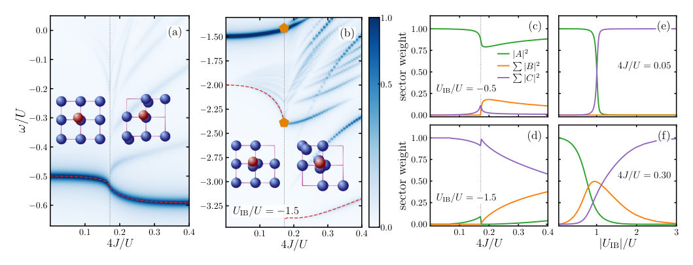
<figcaption class="paper-figure-caption"><b>Fig 1.</b> FIG. 1. The impurity spectral function for UIB/U = −0.5 (a) and −1.5 (b), with the cartoons illustrating the corresponding ground states of the impurity (red ball) in a bath of bosons (blue balls). Orange markers indicate the states giving rise to the beating of the Ramsey signal in Fig. 3, dotted vertical lines give the mean-field critical point (4J/U)c = ( √</figcaption>
</figure>
<figure class="paper-figure-card">
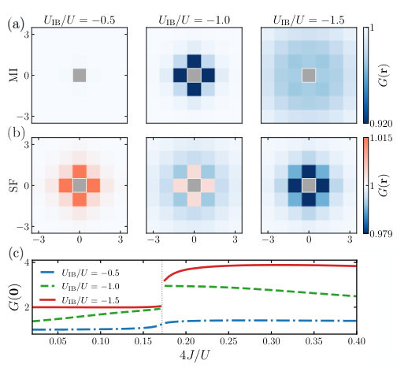
<figcaption class="paper-figure-caption"><b>Fig 2.</b> FIG. 2. Boson density around the impurity given by G(r) for UIB/U = −0.5, −1.0, and −1.5 deep in the MI with 4J/U = 0.05 (a), and in the SF with 4J/U = 0.30 (b). The gray square marks the impurity site, whose density is shown separately in panel (c). Blue (red) indicates a boson density below (above) the bulk value ¯n = 1. (c) On-site impurity- conditioned density G(0) of the ground state as a function of 4J/U for UIB/U = −0.5 in blue, −1.0 in green, and −1.5 in red.</figcaption>
</figure>
<figure class="paper-figure-card">
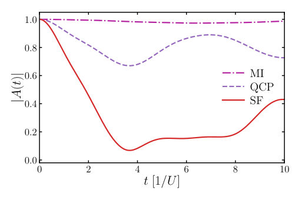
<figcaption class="paper-figure-caption"><b>Fig 3.</b> FIG. 3. Ramsey contrast |A(t)| following the injection of a zero momentum impurity at time t = 0 for UIB/U = −1.5 in the MI with 4J/U = 0.05 (dash-dotted), near the QCP with 4J/U = 0.175 (dashed), and in the SF with 4J/U = 0.30 (solid).</figcaption>
</figure>
</div>

<p><strong>Summary.</strong> This paper theoretically investigates how an impurity particle forms a quasiparticle, or polaron, when immersed in a Bose gas undergoing a Mott-Insulator to Superfluid transition. Using a variational approach, the authors map out the polaron's structure and dynamics, showing that strong correlations near the critical point lead to unique, measurable features in its spectral properties and time evolution.</p>
<p><strong>Why it may be interesting.</strong> This work provides detailed, quantitative predictions for how local impurities interact with strongly correlated quantum fluids, offering a theoretical framework applicable to ultracold atomic experiments in optical lattices.</p>
<details>
<summary>Detailed structure</summary>
<p><strong>Main problem.</strong> The study focuses on developing a unified description of a mobile impurity particle (polaron) immersed in a quantum degenerate Bose gas as it undergoes a phase transition from a Mott Insulator (MI) to a Superfluid (SF) state.</p>
<p><strong>Main result.</strong> The impurity forms various polaron and molecular states, exhibiting non-analytic features near the quantum critical point, and the system's dynamics are strongly dictated by the surrounding bosonic phase.</p>
<p><strong>Method.</strong> The authors employ a multi-mode variational ansatz based on the quantum Gutzwiller approach, solving a generalized eigenvalue problem derived from the Bose-Hubbard model Hamiltonian.</p>
<p><strong>Model / system.</strong> The system models an impurity interacting with a bath of bosons described by the 2D Bose-Hubbard model, characterized by hopping (J), on-site repulsion (U), and impurity-boson interaction ($U_{IB}$).</p>
<p><strong>Key observables.</strong> Impurity spectral function, real space impurity-boson density correlation function $G(r)$, and non-equilibrium Ramsey contrast $|A(t)|$.</p>
<p><strong>Important parameters / regimes.</strong> The ratio of interaction strengths ($U_{IB}/U$) and the ratio of hopping to repulsion ($J/U$), particularly near the quantum critical point (QCP).</p>
<p><strong>Assumptions / limitations.</strong> The analysis relies on a variational ansatz truncated to include up to two excitations of the bosons, and the time evolution is calculated using time-stepped Arnoldi/Lanczos methods.</p>
<p><strong>Figures summary.</strong> Figures illustrate the impurity spectral function across different interaction regimes, and plots show the dependence of wave function components and density correlations on the interaction strength, highlighting changes at the QCP.</p>
<p><strong>Paper structure.</strong> The paper systematically analyzes the ground state structure (spectral properties, density correlations) and the non-equilibrium dynamics (Ramsey contrast) of the polaron across the MI-SF transition, detailing how the underlying bosonic phase dictates the quasiparticle behavior.</p>
</details>
<details>
<summary>Abstract</summary>
<p>A mobile impurity particle immersed in a quantum degenerate gas leads to the formation of a quasiparticle, which can   serve as a sensor for its environment. Here, we develop a unified wave function description of an impurity in a two-dimensional Bose-Hubbard model across the Mott-insulator to superfluid transition. Using a multi-mode variational ansatz based on the quantum Gutzwiller approach, we show that   the impurity can form several kinds of polaronic and molecular states. In addition to their spectral properties, the   wave function provides direct access to the microscopic structure of these states, and we demonstrate that strong correlations in the critical regime of the quantum phase transition give rise to several non-analytic features in the polaron properties. Increasing the impurity-boson interaction leads to transitions between polaron and molecular ground states, and the number of bosons in the impurity dressing cloud grows rapidly at the quantum critical point as the bath modes soften. We furthermore reveal qualitatively distinct non-equilibrium many-body dynamics after the injection of the impurity in the different phases of the Bose-Hubbard model. Our spectral, real space, and dynamical predictions describe complementary properties of   polarons in a strongly correlated bosonic bath, which can be observed using current techniques with atoms in optical lattices.</p>
</details>
<p><sub><a href="#top">↑ back to top</a></sub></p>

<p><a id="paper-2609.33361"></a></p>
<h3 id="criticality-without-temperature-in-an-ising-spin-system"><a href="http://arxiv.org/abs/2609.33361v1">Criticality without Temperature in an Ising Spin System</a></h3>
<p><strong>Authors:</strong> Christos Kakalis, Fotios K. Diakonos<br>
<strong>Type:</strong> theory · <strong>Category:</strong> statistical mechanics · <strong>PDF:</strong> <a href="https://arxiv.org/pdf/2609.33361v1">https://arxiv.org/pdf/2609.33361v1</a><br>
<strong>Analysis basis:</strong> full PDF text, analyzed in chunks
<strong>Topic relevance:</strong> 🔥 <code>non-equilibrium universality</code> <strong>4/5</strong> · <code>driven-dissipative phase transition</code> <strong>3/5</strong> · <code>analog quantum simulation</code> <strong>2/5</strong> · <code>methods for driven-dissipative</code> <strong>2/5</strong> · <code>correlated / nonlocal dissipation</code> <strong>1/5</strong> · <code>scars &amp; prethermalization</code> <strong>1/5</strong></p>
<div class="figure-strip-hint">↔ Scroll figures horizontally</div>
<div class="paper-figures-scroll">
<figure class="paper-figure-card">
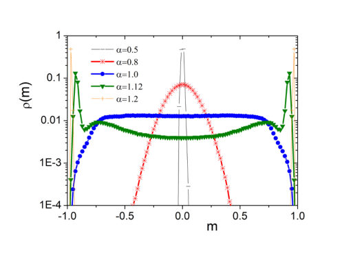
<figcaption class="paper-figure-caption"><b>Fig 1.</b> FIG. 2. Magnetization distributions of the QTCM for differ- ent values of α in logarithmic scale. For α = 0.5 magneti- zation possesses tiny fluctuations around zero and the corre- sponding distribution is delta-like concentrated around m = 0 (black dashes, black solid line). For a = 0.8 the distribution broadens becoming a Gaussian around m = 0 with a vari- ance approximately equal to 0.3 (red stars, red solid line). At a = 1.0 the magnetization distribution flattens around m = 0, indicating the emergence of a higher order maximum (blue circles, blue solid line). When a = 1.12 the distribution has obtained two dominant maxima symmetric with respect to m = 0 for values of m close to ±1....</figcaption>
</figure>
<figure class="paper-figure-card">
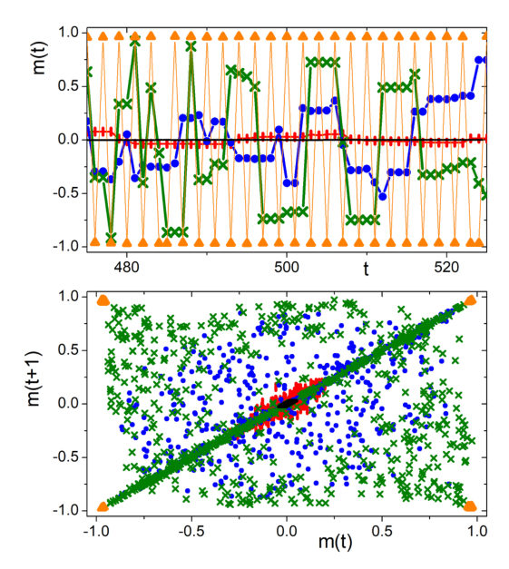
<figcaption class="paper-figure-caption"><b>Fig 2.</b> FIG. 1. Magnetization dynamics in QTCM. In the upper plot is shown a short time interval of 50 algorithmic steps in the time series m(t) for 5 different α-values: α = 0.5 (black dashes, black line), α = 0.8 (red slabs, red line), α = 1.0 (blue circles, blue line), α = 1.12 (olive crosses, olive line) and α = 1.2 (orange triangles, orange line). In the lower plot the return map m(t + 1) = f(m(t)) is graphically displayed for the same choice of α-values as well as color and symbol code as in the upper plot.</figcaption>
</figure>
<figure class="paper-figure-card">
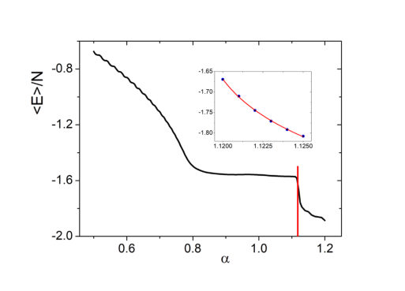
<figcaption class="paper-figure-caption"><b>Fig 3.</b> FIG. 3. Mean energy per spin as a function of α in QTCM. The vertical red line at αc ≈1.11787 indicates the critical α- value. In the inset it is shown a zoom of the main plot in the region just above αc. The blue circles are the calculated points for ⟨E⟩</figcaption>
</figure>
<figure class="paper-figure-card">
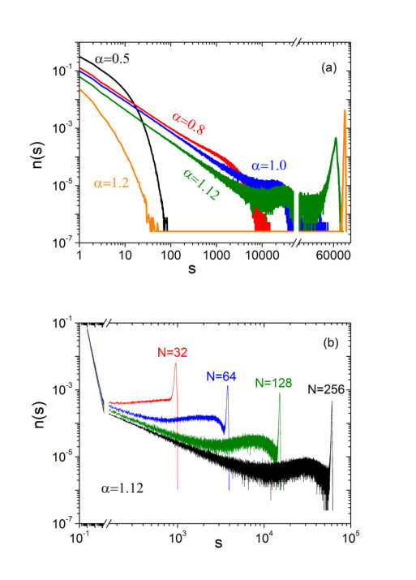
<figcaption class="paper-figure-caption"><b>Fig 4.</b> FIG. 4. (a) The distribution of cluster sizes for the QTCM model using 2562 Ising spins for different values of the control parameter α: 0.5 (black line), 0.8 (red line), 1.0 (blue line), 1.12 (olive line) and 1.2 (orange line). The break on the hori- zontal axis is at s = 50000 and it is used to make the plateau region and the hump at large s-values more visible. In (b) we show the cluster size distribution for α = 1.12 ≈αc) cal- culated using different number of Ising spins: 32 × 32 (black line), 64 × 64 (red line), 128 × 128 (blue line) and 256 × 256 (olive line). The break on the s-axis is at s = 160 and it is used to make the details of the distribution in the large s region more...</figcaption>
</figure>
<figure class="paper-figure-card">
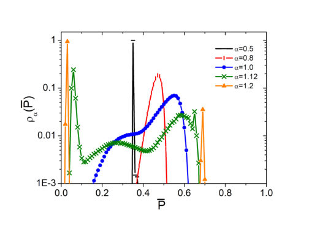
<figcaption class="paper-figure-caption"><b>Fig 5.</b> FIG. 5. The distribution ρα(P) of mean connectivity proba- bility values P for five different values of α: 0.5 (black dashes, black solid line), 0.8 (red slabs, red solid line), 1.0 (blue cir- cles, blue solid line), 1.12 (olive diagonal crosses, olive line) and 1.2 (orange triangles, orange solid line).</figcaption>
</figure>
</div>

<p><strong>Summary.</strong> This work shows that critical behavior in an Ising spin system can arise purely from memory-dependent connectivity rules, bypassing the need for temperature or explicit energy dynamics. By tuning a connectivity parameter $\alpha$, the system undergoes a transition marked by spontaneous symmetry breaking and singular energy responses. This reveals a novel route to understanding non-equilibrium criticality in many-body systems.</p>
<p><strong>Why it may be interesting.</strong> It provides a non-equilibrium mechanism for criticality, which is highly relevant for understanding complex dynamics in open quantum systems where thermal baths or simple Hamiltonians might not fully capture the physics.</p>
<details>
<summary>Detailed structure</summary>
<p><strong>Main problem.</strong> The paper demonstrates that critical-like collective behavior can emerge in an Ising spin system without relying on temperature or energy-based dynamics.</p>
<p><strong>Main result.</strong> Memory-dependent connectivity alone can generate collective critical behavior, evidenced by singular responses in energy derivatives and the emergence of spontaneous symmetry breaking as a control parameter is varied.</p>
<p><strong>Method.</strong> The authors use numerical simulations to analyze the system's evolution by varying a connectivity strength parameter ($\alpha$) and observing changes in magnetization distributions and cluster-size statistics.</p>
<p><strong>Model / system.</strong> The system is an Ising spin model on a square lattice whose dynamics are governed by a Quiet-Time Cluster Model (QTCM). This dynamics is memory-dependent, controlled by the time elapsed since each spin was last updated, and is decoupled from the Ising Hamiltonian.</p>
<p><strong>Key observables.</strong> Magnetization ($m$), Ising Energy ($E$), and the cluster-size distribution ($n(s)$).</p>
<p><strong>Important parameters / regimes.</strong> The connectivity strength parameter $\alpha$, which drives the system through different collective regimes.</p>
<p><strong>Assumptions / limitations.</strong> The dynamics are assumed to be driven solely by the local quiet-time variable, and the Ising Hamiltonian only enters as a post-hoc observable.</p>
<p><strong>Figures summary.</strong> Figures illustrate the evolution of magnetization distributions (from $\delta$-like to multi-peaked) and the cluster-size distribution (showing power-law regimes) as the parameter $\alpha$ is tuned, highlighting the critical point $\alpha_c$.</p>
<p><strong>Paper structure.</strong> The paper introduces the QTCM dynamics, analyzes the system's response to varying $\alpha$ by examining magnetization and energy, and concludes by showing that memory effects alone can induce critical phenomena, bypassing the need for thermal or energy-based driving.</p>
</details>
<details>
<summary>Abstract</summary>
<p>Criticality in the Ising model is conventionally generated by Hamiltonian dynamics and controlled by temperature. Here we show that critical like behavior can emerge in an Ising system whose dynamics is completely independent of the Ising Hamiltonian and contains no temperature like parameter. We introduce an adaptive cluster dynamics in which spin connectivity is controlled by a local quiet time variable, the time elapsed since a spin was last updated. The Ising Hamiltonian enters only as an observable characterizing the resulting configurations. As the parameter $α$, controlling the connectivity strength, is varied, the system undergoes spontaneous symmetry breaking accompanied by strong collective fluctuations. The cluster size distribution develops an extended power law regime, terminated by a small finite size hump at the largest scales, while the Ising energy exhibits a singular response to the variation of $α$. These results show that memory dependent connectivity alone can generate collective critical behavior, revealing a route to nonequilibrium criticality without energy based dynamics.</p>
</details>
<p><sub><a href="#top">↑ back to top</a></sub></p>

<p><a id="paper-2609.34332"></a></p>
<h3 id="observation-of-a-topological-edge-state-among-localized-bulk-states-in-the-anisotropic-quantum-rabi-model"><a href="http://arxiv.org/abs/2609.34332v1">Observation of a topological edge state among localized bulk states in the anisotropic quantum Rabi model</a></h3>
<p><strong>Authors:</strong> Sungjoo Lim, Chanyang Im, Christopher G. Yale, Brian K. McFarland, Edward C. Tortorici, Daniel S. Lobser, Melissa C. Revelle, Susan M. Clark, Mahn-Soo Choi, Junki Kim<br>
<strong>Type:</strong> experiment · <strong>Category:</strong> other · <strong>PDF:</strong> <a href="https://arxiv.org/pdf/2609.34332v1">https://arxiv.org/pdf/2609.34332v1</a><br>
<strong>Analysis basis:</strong> full PDF text, analyzed in chunks
<strong>Topic relevance:</strong> 🔥 <code>analog quantum simulation</code> <strong>4/5</strong> · <code>QC/QI experiment</code> <strong>3/5</strong> · <code>quantum measurements</code> <strong>2/5</strong> · <code>Tavis-Cummings &amp; cavity-many-emitter</code> <strong>1/5</strong> · <code>quantum optics experiment</code> <strong>1/5</strong></p>
<div class="figure-strip-hint">↔ Scroll figures horizontally</div>
<div class="paper-figures-scroll">
<figure class="paper-figure-card">
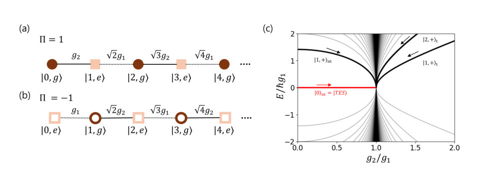
<figcaption class="paper-figure-caption"><b>Fig 1.</b> FIG. 1. Parity chains and subspace energy spectrum of the AQRM. (a), (b) Parity-resolved map- ping of the AQRM Hilbert space onto two decoupled one-dimensional subspaces. Each site corre- sponds to a spin–Fock state |n, g(e)⟩, with nearest-neighbor couplings ∝√n g1,2 arising from the Jaynes–Cummings (JC) and anti-Jaynes–Cummings (AJC) interactions. The resulting bipartite lattice is analogous to that of the SSH model but with √n-dependent couplings breaking transla- tional symmetry. (c) Energy spectrum as a function of the coupling ratio g2/g1 in the even-parity subspace, with energies in units of ℏg1. In the regime g2 &lt; g1, the TES (|0⟩nt, red) appears at zero energy inside the bulk gap,...</figcaption>
</figure>
<figure class="paper-figure-card">
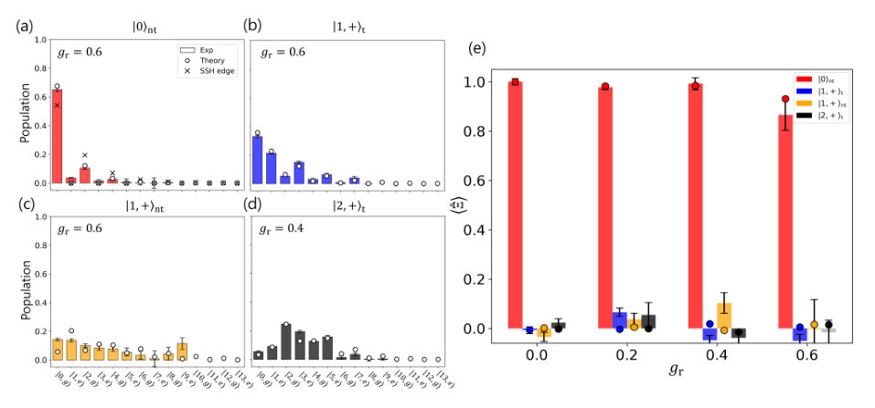
<figcaption class="paper-figure-caption"><b>Fig 2.</b> FIG. 2. Measured joint spin–Fock populations and chirality of the TES and three representative bulk states |1, +⟩t, |1, +⟩nt, and |2, +⟩t. (a–d) Joint spin–Fock populations of the TES |0⟩nt at gr = 0.6 (a), |1, +⟩t at gr = 0.6 (b), |1, +⟩nt at gr = 0.6 (c), and |2, +⟩t at gr = 0.4 (d). The |2, +⟩t state is shown at gr = 0.4, as its simulated preparation fidelity at gr = 0.6 is expected to fall below 0.5 (see Appendix C). Bars and circles denote experimental data and theoretical predictions. In (a), crosses indicate the SSH edge-state profile for comparison. The TES shows strong localization near the origin, faster than the exponential decay of the SSH case, and exclusively occupies the...</figcaption>
</figure>
<figure class="paper-figure-card">

<figcaption class="paper-figure-caption"><b>Fig 3.</b> FIG. 3. Spin–boson correlations in the TES and bulk states. The shaded bars indicate the exper- imentally estimated bounds on the second-order R´enyi entropy, with error bars indicating uncer- tainties arising from binomial sampling and fitting. The symbols show the corresponding numerical simulation results. The hatched bar indicates the |2, +⟩t data at gr = 0.6 with limited preparation fidelity (see Appendix C). The TES remains near zero, indicating a nearly separable spin subsys- tem, whereas the bulk states lie close to ln 2, reflecting strong spin–boson correlations.</figcaption>
</figure>
<figure class="paper-figure-card">
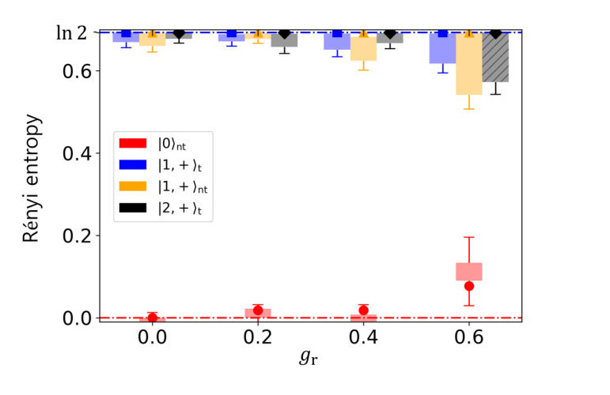
<figcaption class="paper-figure-caption"><b>Fig 4.</b> Figure 3 presents the experimentally determined lower and upper bounds of S2,spin for each state. For the TES, the upper bound remains negligibly small, taking values of 0.00 ± 0.01, 0.02 ± 0.01, and 0.01 ± 0.02 for gr = 0.0, 0.2, and 0.4, respectively, indicating that the spin state of the TES is largely decoupled from its bosonic counterpart. At gr = 0.6, the upper bound increases to 0.13 ± 0.06, primarily due to imperfect state preparation arising from non-adiabaticity and phonon dephasing. We calculated the lower bounds for the bulk states, finding that S2,spin ≥0.62 ± 0.02 up to gr = 0.4, with the bound decreasing to 0.54 ± 0.03 at gr = 0.6. These results indicate that the spin–boson...</figcaption>
</figure>
<figure class="paper-figure-card">
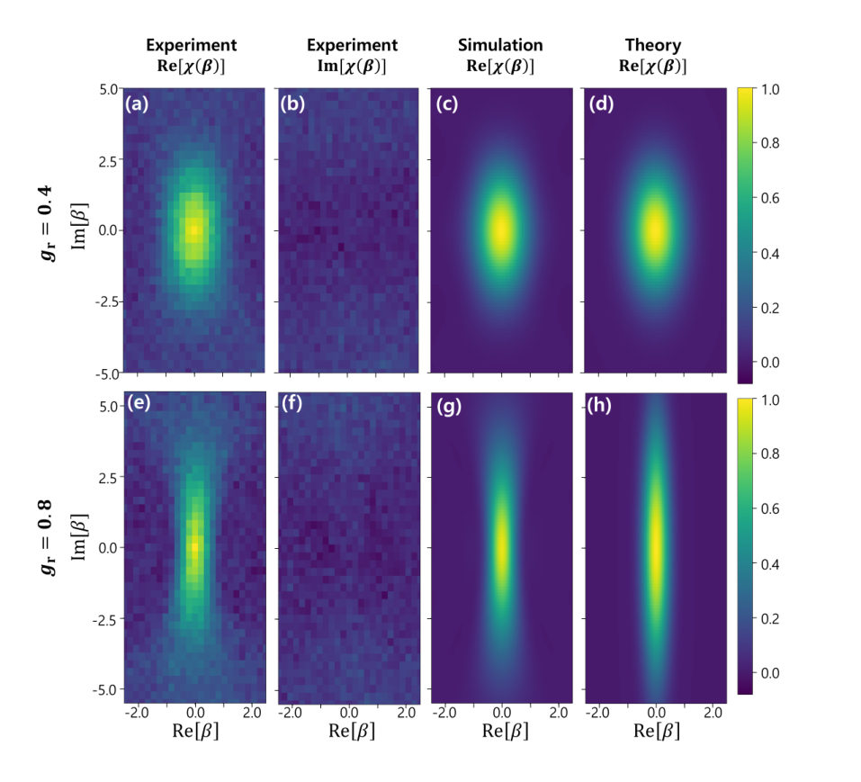
<figcaption class="paper-figure-caption"><b>Fig 5.</b> FIG. 4. The characteristic function χ(β) of the bosonic subpart of the TES at gr = 0.4 (a–d) and 0.8 (e–h). (a,e) and (b,f) show the experimentally reconstructed Re[χ(β)] and Im[χ(β)], respectively. (c,g) show the corresponding numerical simulations of Re[χ(β)], while (d,h) show the theoretical results. The anisotropic shape of Re[χ(β)], compressed along Re[β] and expanded along Im[β], reveals anti-squeezing in the P quadrature and squeezing in the X quadrature. The measured Im[χ(β)] remains close to zero for all β.</figcaption>
</figure>
</div>

<p><strong>Summary.</strong> This research investigates topological edge states in the anisotropic quantum Rabi model using trapped-ion quantum simulators. The authors overcome the challenge of distinguishing edge states from bulk states when periodicity is broken by analyzing intrinsic quantum signatures. They successfully identify the topological edge state by measuring its unique chirality and spin-boson separability, providing a powerful, experimentally verifiable method for probing topological physics.</p>
<p><strong>Why it may be interesting.</strong> This work provides a concrete, measurable protocol for detecting topological phases in quantum simulators by moving beyond simple localization arguments to use intrinsic quantum correlations like chirality and entanglement structure.</p>
<details>
<summary>Detailed structure</summary>
<p><strong>Main problem.</strong> The primary challenge is distinguishing topological edge states (TES) from localized bulk states when the system lacks translational periodicity, making spatial localization an insufficient diagnostic tool.</p>
<p><strong>Main result.</strong> The TES can be robustly identified by its intrinsic topological signatures, specifically exhibiting well-defined chirality and near-complete spin-boson separability, which contrasts sharply with the bulk states.</p>
<p><strong>Method.</strong> The study employs adiabatic state preparation and characterization using trapped-ion quantum simulators to measure multiple quantum diagnostics.</p>
<p><strong>Model / system.</strong> The system is the Anisotropic Quantum Rabi Model (AQRM) simulated using trapped $^{171}	ext{Yb}^+$ ions. The model involves coupling between spin and bosonic (motional) degrees of freedom.</p>
<p><strong>Key observables.</strong> Chirality ($\langle\hat{\Xi}
angle$), spin-boson separability (quantified by second-order Rényi entropy $S_{2,	ext{spin}}$), and the bosonic component's phase-space distribution (squeezed vacuum state).</p>
<p><strong>Important parameters / regimes.</strong> The relative coupling strength $g_r = g_2/g_1$ dictates the topological phase ($g_r < 1$ for TES) versus the trivial phase ($g_r > 1$).</p>
<p><strong>Assumptions / limitations.</strong> The analysis relies on the ability to measure expectation values in the even-parity subspace, and the experiment uses trapped $^{171}	ext{Yb}^+$ ions.</p>
<p><strong>Figures summary.</strong> Figures illustrate parity-resolved energy spectra showing the zero-energy TES, joint spin-Fock populations and chirality distinguishing TES from bulk states, and the characteristic function of the bosonic subsystem.</p>
<p><strong>Paper structure.</strong> The paper first establishes the theoretical framework and diagnostics (chirality, separability) for distinguishing TES. It then details the experimental implementation using trapped ions, measuring these diagnostics across different coupling regimes to confirm the topological characterization.</p>
</details>
<details>
<summary>Abstract</summary>
<p>Topological phases are governed by discrete symmetries that protect boundary modes against local perturbations. When translational periodicity is absent, the bulk states also become localized, so that a topological edge state can no longer be distinguished from them by spatial localization alone. Here, we investigate the topological edge state (TES) and bulk eigenstates of the anisotropic quantum Rabi model (AQRM) in a trapped-ion quantum simulator. The AQRM hosts a topological phase in a one-dimensional synthetic lattice, whose translational symmetry is broken by the non-uniform couplings scaling with the site index. While both the TES and bulk states show localized distributions, we find that the TES exhibits well-defined chirality and near-complete spin--boson separability as signatures of the topological phase, in contrast to the bulk states. Phase-space tomography further reveals that the bosonic component of the TES is a squeezed vacuum state, with squeezing up to 6.45 dB. These results identify the TES through its intrinsic topological signatures and establish eigenstate-level characterization as a route to probing topological phenomena.</p>
</details>
<p><sub><a href="#top">↑ back to top</a></sub></p>

<p><a id="paper-2609.34095"></a></p>
<h3 id="tensor-engineered-van-der-waals-nbocl2-resonant-metasurface-for-polarization-entangled-bell-state-generation"><a href="http://arxiv.org/abs/2609.34095v1">Tensor-Engineered Van der Waals NbOCl2 Resonant Metasurface for Polarization-entangled Bell State Generation</a></h3>
<p><strong>Authors:</strong> Xin Zeng, Wenna Du, Yun-Kun Wu, Yuyang Zhang, Zhiyong Zhang, Kwok Kwan Tang, Ruihuan Duan, Xiaotian Bao, Yiyang Gong, Yuexing Xia, Yutong Zhang, Jinhan Zhao, Yubo Tian, Yangguang Zhong, Chuanxiu Jiang, Yubin Wang, Jianhui Fu, Shuai Yue, Guankui Long, Qing Zhang, Zheng Liu, Xi-Feng Ren, Xinfeng Liu<br>
<strong>Type:</strong> experiment · <strong>Category:</strong> quantum information and computing · <strong>PDF:</strong> <a href="https://arxiv.org/pdf/2609.34095v1">https://arxiv.org/pdf/2609.34095v1</a><br>
<strong>Analysis basis:</strong> full PDF text, analyzed in chunks
<strong>Topic relevance:</strong> 🔥 <code>quantum optics experiment</code> <strong>4/5</strong> · <code>QC/QI experiment</code> <strong>3/5</strong> · <code>interference shaping light</code> <strong>3/5</strong></p>
<div class="figure-strip-hint">↔ Scroll figures horizontally</div>
<div class="paper-figures-scroll">
<figure class="paper-figure-card">
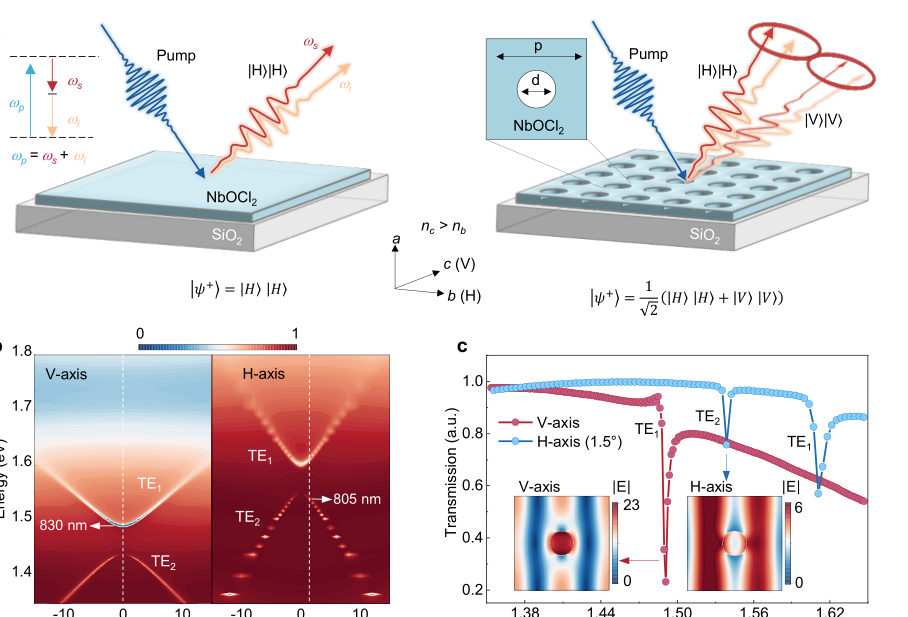
<figcaption class="paper-figure-caption"><b>Fig 1.</b> Fig.1ǀ Design of vdW-QP for polarization-entangled quantum light generation. a, Conceptual illustration of down-conversion emission in NbOCl2 (left) and polarization- entangled down-conversion light generation enabled by the vdW-QP (right). NbOCl2 exhibits strong in-plane anisotropy, with the refractive index along the c-axis (nc) larger than that along the b-axis (nb). For clarity, the b-axis and c-axis are denoted as the H-axis and V-axis, respectively. Under pumping at frequency 𝜔𝑝 , SPDC generates signal 𝜔𝑠 and idler 𝜔𝑖 photon pairs satisfying 𝜔𝑝= 𝜔𝑠+ 𝜔𝑖 . For NbOCl2, both photons are H-polarized. Through metasurface- induced resonances, the SPDC emission amplitudes from the two...</figcaption>
</figure>
<figure class="paper-figure-card">
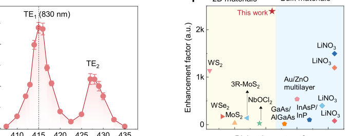
<figcaption class="paper-figure-caption"><b>Fig 2.</b> Fig.2ǀ vdW-QP for efficient SHG. a, The top view SEM image of vdW-QP. The entire array occupies an area of approximately 23×23 μm2. The illustration shows the SEM image of vdW- QP tilted at 52° (The scale bar is 500 nm). b, Angle-resolved TE-polarized transmission spectra of the vdW-QP along the V-axis at a filling factor F = 0.255. It shows TE1 and TE2 modes, consistent with the simulations, and indicates the strongest SHG enhancement at 830 nm. c, SHG spectra collected at the same power in vdW-QP (patterned region, red line) and NbOCl2 (unpatterned region, blue) at an excitation wavelength of 830 nm. Illustration: Optical images of SH signals in patterned (up) and unpatterned (down)...</figcaption>
</figure>
<figure class="paper-figure-card">

<figcaption class="paper-figure-caption"><b>Fig 3.</b> Fig.3ǀ Engineered anisotropic χ(2) tensor of the vdW-QP. a-e, Polar plots of the SHG intensity as a function of polarization angle measured at SHG wavelengths of 390, 395, 402, 405, and 410 nm, respectively. f, Wavelength-dependent SHG intensity ratio between the IHVV and IHHH processes in vdW-QP and NbOCl2. As the pump wavelength approaches the V-axis resonance (810 nm) of the vdW-QP, the SHG intensity of IHVV can be tuned to approaches and even exceed that of IHHH. By contrast, it shows small ratios for NbOCl2 throughout the entire wavelength range. g, The calculated wavelength-dependent fidelity and concurrence of the Bell states in vdW-QP.</figcaption>
</figure>
<figure class="paper-figure-card">

<figcaption class="paper-figure-caption"><b>Fig 4.</b> Fig.4ǀ Experimental demonstration and Bell-state construction with vdW-QP. a, Schematic of the optical setup for SPDC characterization and polarization-state tomography. QWP: quarter- wave plate, HWP: half-wave plate, BS: beam splitter, DM: dichroic mirror, M: mirror, SPCM: single-photon counting module. b, Power dependent normalized second correlation along the V- axis polarization in the vdW-QP. The inset shows the power dependent normalized correlation function measured at zero delay. c, Second correlation function measured from vdW-QP and NbOCl2. Detection directions are defined relative to the NbOCl2 axes, with the pump polarization aligned along the H-axis to maximize the coincidence...</figcaption>
</figure>
</div>

<p><strong>Summary.</strong> This paper reports the design and experimental realization of a metasurface on $   ext{NbOCl}_2$ to generate polarization-entangled photon pairs. By exploiting the material's inherent optical anisotropy, the metasurface is engineered to balance the nonlinear coupling pathways, achieving a high-fidelity entangled state source. This establishes a powerful, scalable platform for quantum photonics.</p>
<p><strong>Why it may be interesting.</strong> This work provides a concrete, scalable platform (vdW metasurfaces) for realizing quantum light sources, moving beyond bulk crystals and directly addressing the engineering challenge of controlling quantum interactions in solid-state systems.</p>
<details>
<summary>Detailed structure</summary>
<p><strong>Main problem.</strong> The challenge is to create compact, controllable sources for polarization-entangled photon pairs, which are crucial resources for quantum information technologies.</p>
<p><strong>Main result.</strong> The authors successfully demonstrated the generation of polarization-entangled Bell states with a measured fidelity up to 92% using a specially engineered metasurface.</p>
<p><strong>Method.</strong> They engineered a resonant metasurface on a van der Waals material ($   ext{NbOCl}_2$) to manipulate its intrinsic optical anisotropy, thereby controlling the nonlinear susceptibility tensor for Spontaneous Parametric Down-Conversion (SPDC).</p>
<p><strong>Model / system.</strong> The physical system is a resonant vdW nonlinear metasurface patterned on $  ext{NbOCl}_2$. The engineering exploits the material's inherent optical anisotropy to selectively enhance and balance the nonlinear coupling pathways ($\chi^{(2)}$) responsible for generating entangled pairs.</p>
<p><strong>Key observables.</strong> Measured state fidelity (up to 92%), concurrence ($0.91 \pm 0.04$), and the ratio of nonlinear susceptibilities ($\chi_{HVV}^{(2)	ext{eff}} / \chi_{HHH}^{(2)	ext{eff}}$).</p>
<p><strong>Important parameters / regimes.</strong> Metasurface dimensions ($p = 450 	ext{ nm}$, $d = 115 	ext{ nm}$), resonance shifts ($\sim 106 	ext{ meV}$), and the required spectral overlap for balanced SPDC.</p>
<p><strong>Assumptions / limitations.</strong> The primary assumption is that metasurface engineering can effectively control the effective nonlinear susceptibility tensor ($\chi^{(2)}$) to balance the two orthogonal polarization channels.</p>
<p><strong>Figures summary.</strong> Figures illustrate the concept of Bell state generation via SPDC, show angle-dependent transmission spectra revealing anisotropic resonances, and present the calculated/measured entanglement fidelity and density matrix components.</p>
<p><strong>Paper structure.</strong> The paper progresses from identifying the need for controllable entangled sources to detailing the metasurface design, simulating the anisotropic optical response (FDTD), demonstrating the nonlinear enhancement (SHG), and finally characterizing the generated quantum state via coincidence measurements and polarization tomography.</p>
</details>
<details>
<summary>Abstract</summary>
<p>Polarization-entangled photon pairs are essential resources for quantum information technologies, yet realizing compact sources with intrinsically controllable entanglement remains challenging. Van der Waals (vdW) nonlinear materials such as NbOCl2 provide atomically thin platforms for quantum light generation, yet their native crystalline anisotropies as natural materials impose limitations on accessible quantum states. Here, we develop a resonant vdW nonlinear metasurface based on NbOCl2 that exploits its intrinsic optical anisotropy to engineer polarization-dependent nonlinear responses. The anisotropic optical dispersion enables selective manipulation of resonant modes, resulting in a three-order-of-magnitude enhancement of the nonlinear response along the c axis. By further tailoring these resonant modes, we redistribute the effective second-order nonlinear susceptibility tensor between orthogonal polarization channels, balancing the spontaneous parametric down-conversion pathways along the b and c axes. This enables polarization-entangled photon generation with a measured fidelity of up to 92%. Our work establishes metasurface-enabled nonlinear optical engineering as a strategy for enhancing and controlling quantum light generation in vdW materials, providing a pathway toward scalable quantum photonic platforms.</p>
</details>
<p><sub><a href="#top">↑ back to top</a></sub></p>

<p><a id="paper-2609.34935"></a></p>
<h3 id="classical-simulation-of-amplitude-damped-bucket-brigade-quantum-random-access-memories-via-predictable-branch-evolution"><a href="http://arxiv.org/abs/2609.34935v1">Classical simulation of amplitude-damped bucket-brigade quantum random access memories via predictable branch evolution</a></h3>
<p><strong>Authors:</strong> Zhao-Yun Chen, Ming-Yang Tan, Sheng Zhang, Peng Wang, Yun-Jie Wang, Guo-Ping Guo<br>
<strong>Type:</strong> theory · <strong>Category:</strong> quantum information and computing · <strong>PDF:</strong> <a href="https://arxiv.org/pdf/2609.34935v1">https://arxiv.org/pdf/2609.34935v1</a><br>
<strong>Analysis basis:</strong> full PDF text, analyzed in chunks
<strong>Topic relevance:</strong> 🔥 <code>methods for driven-dissipative</code> <strong>4/5</strong> · <code>quantum measurements</code> <strong>3/5</strong> · <code>Keldysh / 2PI / non-Gaussian methods</code> <strong>1/5</strong> · <code>correlated / nonlocal dissipation</code> <strong>1/5</strong></p>
<div class="figure-strip-hint">↔ Scroll figures horizontally</div>
<div class="paper-figures-scroll">
<figure class="paper-figure-card">

<figcaption class="paper-figure-caption"><b>Fig 1.</b> FIG. 1. Concept of the pruned simulation of a qubit-encoded (n, k)-QRAM for one trajectory, with n = 3 shown. Each node carries an address qubit, used for routing, and a data qubit. Idle nodes have a = 0, which is indistinguishable from the pointer value “route left”. At the top, an X-type fault at a left child marks as bad the subtree of its nearest right-child ancestor— the parent in the example drawn. Its stuck excitation climbs up through idle left-pointing ancestors and splits the off-path components into distinct final-configuration families, as captured by Eq. (9). A fault at a right child, in contrast, marks only its own subtree. The first good branch, drawn as a thick line, is...</figcaption>
</figure>
<figure class="paper-figure-card">

<figcaption class="paper-figure-caption"><b>Fig 2.</b> FIG. 2. Trajectory-averaged fidelity of the qubit encoding versus address size n, for ε = γ from 10−5 to 10−3, with 200 trajectories per point, k = 3, and 500 input branches; error bars show the standard error of the mean over the trajectories.</figcaption>
</figure>
<figure class="paper-figure-card">

<figcaption class="paper-figure-caption"><b>Fig 3.</b> FIG. 3. Targeted verification of the closed-form predictions under damping. (a) Normalized output-word probabilities of the data register in no-jump trajectories of the qubit encoding, shown as points, against Eq. (13) shown as lines. Words are grouped by the Hamming weight w = Ham(c ⊕bout) of the error pattern, and words of the same w collapse onto one value. All words with theoretical probability down to 10−12 agree to floating-point accuracy. (b) Qutrit encoding. Measured relative branch weights |Ai|2/|Aref|2 versus the analytic exposure counter (1 −γ)∆c of Proposition 1. The measured weights agree with the analytic counter to machine precision, and every good branch ends in the ideal...</figcaption>
</figure>
<figure class="paper-figure-card">

<figcaption class="paper-figure-caption"><b>Fig 4.</b> FIG. 4. Full versus pruned simulation of the qubit encoding with k = 3 under the data-loading input of one branch per address with zero bus input, so that the full mode evolves exactly D = 2n branches, averaged over 50 trajectories. Error bars show the standard error of the mean over the trajectories. (a) Wall-clock time per query. (b) Pruned-over-full speedup, the ratio of the mean wall-clock times of the two modes. (c) Explicitly simulated branches. All input branches in the full mode, shown solid, are compared with the bad branches plus the single reference branch in the pruned mode, shown dotted; the speedup in panel (b) is the ratio of the two. At zero noise the pruned mode evolves...</figcaption>
</figure>
<figure class="paper-figure-card">

<figcaption class="paper-figure-caption"><b>Fig 5.</b> Figure 5(a) shows the per-data-qubit output error of no-jump trajectories. It tracks n2γ2/4 with fitted slopes 2.000–2.003 and prefactor ratio 1.0001 at every n, confirming the purely second-order coherent leakage of Sec. IV E. Figure 5(b) then separates trajectory en- sembles with damping only and 500 input branches. The trajectory-averaged query infidelity scales linearly in γ with fitted slopes 0.94–0.99. The same average restricted to fault-free trajectories scales quadratically, with slopes 2.00, and lies orders of magnitude lower. All first-order infidelity is therefore carried by trajectories containing</figcaption>
</figure>
</div>

<p><strong>Summary.</strong> This work presents a novel, highly efficient classical simulation technique for noisy Quantum Random Access Memory (QRAM) using branch pruning. By analytically predicting the evolution of 'good' quantum branches, the authors achieve substantial speedups over full simulations. This advances the practical simulation capabilities for quantum memory architectures under realistic noise models.</p>
<p><strong>Why it may be interesting.</strong> The techniques developed for analytically predicting quantum evolution along specific, noise-avoiding paths are highly relevant for simulating open quantum systems where full time evolution is intractable.</p>
<details>
<summary>Detailed structure</summary>
<p><strong>Main problem.</strong> The paper addresses the challenge of developing a fast and accurate classical simulation for Quantum Random Access Memory (QRAM) operating under noise, specifically amplitude damping.</p>
<p><strong>Main result.</strong> They achieve significant computational speedups (up to 285x) by developing a branch pruning technique that analytically predicts the final states of 'good' quantum branches.</p>
<p><strong>Method.</strong> The core method is a quantum-trajectory Monte Carlo simulation enhanced by branch pruning, which avoids full evolution for predictable paths.</p>
<p><strong>Model / system.</strong> The system modeled is a bucket-brigade QRAM, analyzed using both qubit and qutrit encodings. Noise includes amplitude damping and depolarizing faults.</p>
<p><strong>Key observables.</strong> End-state fidelities, speedup factors (pruned-over-full), and the in-branch infidelity (second order in the damping rate $\gamma$).</p>
<p><strong>Important parameters / regimes.</strong> Amplitude damping strength ($\gamma$), address size ($n$), and noise probability ($\epsilon$).</p>
<p><strong>Assumptions / limitations.</strong> The predictability of good branches under amplitude damping was not automatic, requiring novel analytical treatments for both qutrit and qubit cases.</p>
<p><strong>Figures summary.</strong> Figure 1 conceptually shows the pruned simulation for qubit-encoded QRAM using the XOR mirror. Figure 4 plots the speedup and evolved fraction versus noise level and address size.</p>
<p><strong>Paper structure.</strong> The paper first establishes the need for efficient simulation under damping, then details the analytical predictability for qutrit and qubit encodings, proposes a revised pruning criterion, and finally validates the entire algorithm using end-to-end benchmarks and cross-checks against density matrix evolution.</p>
</details>
<details>
<summary>Abstract</summary>
<p>Classical simulation of quantum random access memory (QRAM) under noise can be accelerated dramatically by branch pruning: noise histories are sampled as trajectory ensembles, and good branches, whose routing paths avoid every sampled fault, need not be evolved because their final states are analytically predictable. Under amplitude damping this predictability is not automatic, because the no-jump operator $K_0$ acts on every branch at every time slice. Here we give a complete account of damping-channel predictability in bucket-brigade QRAM simulation, for both qutrit and qubit encodings. For the qutrit encoding, $K_0$ is diagonal in the node basis, and the wait state $|W\rangle$ is its fixed point, so a good branch follows the noiseless orbit up to a scalar attenuation. In the qubit encoding, phase-kickback memory fetching between two Hadamard walls makes $K_0$ no longer diagonal, yet the resulting structure is exactly solvable in closed form. Conditional on no jump, the in-branch infidelity of a good branch is second order in the damping rate $γ$, with coherent leakage $\sim n^2γ^2/4$ per data qubit, and the closed form captures it without approximation. We also revise the pruning criterion for the qubit encoding. The resulting algorithm evolves only the bad branches plus one reference branch and shares every other cost with the full evolution it replaces. It is validated by end-to-end benchmarks with pruned-over-full speedups up to $285\times$ and by trajectory-level tests confirming every closed form to machine precision.</p>
</details>
<p><sub><a href="#top">↑ back to top</a></sub></p>

<p><a id="paper-2609.33568"></a></p>
<h3 id="generalized-pairing-eigenstates-in-three-component-hubbard-models-under-a-transverse-field"><a href="http://arxiv.org/abs/2609.33568v1">Generalized η-pairing eigenstates in three-component Hubbard models under a transverse field</a></h3>
<p><strong>Authors:</strong> F. X. Liu, Z. Song<br>
<strong>Type:</strong> theory · <strong>Category:</strong> strongly correlated electrons · <strong>PDF:</strong> <a href="https://arxiv.org/pdf/2609.33568v1">https://arxiv.org/pdf/2609.33568v1</a><br>
<strong>Analysis basis:</strong> full PDF text, analyzed in chunks
<strong>Topic relevance:</strong> 🔥 <code>scars &amp; prethermalization</code> <strong>4/5</strong> · <code>analog quantum simulation</code> <strong>3/5</strong> · <code>non-equilibrium universality</code> <strong>2/5</strong></p>
<div class="figure-strip-hint">↔ Scroll figures horizontally</div>
<div class="paper-figures-scroll">
<figure class="paper-figure-card">

<figcaption class="paper-figure-caption"><b>Fig 1.</b> FIG. 1. Fidelity dynamics F(t) for (a) the vacuum initial state in Eq. (67) and (b) the maximally mixed pairing state in Eq. (68). The solid curves (Perturbative) show the first-order projected dynamics obtained from Eq. (60), whereas the open circles (Exact) show the exact time evolution in the full even-parity Fock space under the single-impurity Hamiltonian in Eq. (56). The system size is N = 4, and the non-Hermitian impurity field is Bj = 0.1 δj0(1, 0, −i). In both panels, the fidelity approaches unity at long times, demonstrating the robustness of the EP-induced state preparation.</figcaption>
</figure>
</div>

<p><strong>Summary.</strong> This paper analyzes three-component Hubbard models under a transverse field, developing a generalized $\eta$-pairing concept to find exact eigenstates despite symmetry breaking. The authors construct a specific tensor-product state whose dynamics exhibit quantum many-body scarring and long-range order. The work is significant for establishing new theoretical tools to describe correlated electron systems beyond conventional pairing symmetries.</p>
<p><strong>Why it may be interesting.</strong> The work extends pairing concepts (like $\eta$-pairing) to multi-component systems where symmetry is broken, providing a theoretical framework for understanding exotic correlated phases in complex quantum materials.</p>
<details>
<summary>Detailed structure</summary>
<p><strong>Main problem.</strong> The study investigates the existence and properties of exact eigenstates in three-component Hubbard models subjected to a transverse field, particularly concerning generalized $\eta$-pairing symmetry.</p>
<p><strong>Main result.</strong> The authors constructed exact eigenstates exhibiting off-diagonal long-range order and developed a tensor-product state whose dynamics realize quantum many-body scar dynamics with long-range magnetic order.</p>
<p><strong>Method.</strong> The research employs the restricted spectrum-generating algebra (RSGA) to construct the exact eigenstates and analyzes state preparation using quench dynamics, comparing perturbative and exact time evolution.</p>
<p><strong>Model / system.</strong> The system is a three-component Hubbard model on a bipartite lattice, governed by a Hamiltonian including on-site interactions, hopping, and a transverse field term that breaks component number conservation.</p>
<p><strong>Key observables.</strong> Off-diagonal long-range order (ODLRO), fidelity $F(t)$ approaching unity, and the existence of three equally spaced energy towers.</p>
<p><strong>Important parameters / regimes.</strong> The transverse field strength ($\Sigma_x^j$), chemical potential ($\mu$), and resonant conditions are key parameters.</p>
<p><strong>Assumptions / limitations.</strong> The analysis relies on the generalized $\eta$-pairing operators generating exact eigenstates via the RSGA, and the state preparation analysis compares perturbative approximations to full exact time evolution.</p>
<p><strong>Figures summary.</strong> Figure 1 compares the fidelity dynamics $F(t)$ for both vacuum and maximally mixed initial states, showing that the fidelity approaches unity, confirming robust state preparation.</p>
<p><strong>Paper structure.</strong> The paper first establishes the theoretical framework by introducing the generalized $\eta$-pairing operator and using RSGA to find exact eigenstates. It then constructs an exact tensor-product state and discusses its periodic dynamics. Finally, it proposes and verifies three quench protocols for preparing this state, analyzing the dynamics using fidelity measures.</p>
</details>
<details>
<summary>Abstract</summary>
<p>We investigate three-component Hubbard models on a bipartite lattice in the presence of a trans?verse field. Unlike the two-component Hubbard model, where the η-pairing symmetry survives the transverse field, the three-component model possesses neither η-pairing symmetry nor conservation of the particle number of each component. We introduce a generalized η-pairing operator, formed as a hybridization of three types of two-component pairing operators, and employ the restricted spectrum-generating algebra to construct a family of exact eigenstates. These eigenstates exhibit off-diagonal long-range order. Furthermore, we construct an exact tensor-product state whose co?herent periodic dynamics provide an exact realization of quantum many-body scar dynamics while simultaneously exhibiting long-range magnetic order. We also propose three protocols for preparing this state via quench dynamics, and verify their effectiveness through numerical simulations.</p>
</details>
<p><sub><a href="#top">↑ back to top</a></sub></p>

<p><a id="paper-2609.35485"></a></p>
<h3 id="out-of-equilibrium-finite-time-percolation-transitions-and-spinodal-like-behaviors-after-quenches-across-magnetic-first-order-transitions-of-ising-systems"><a href="http://arxiv.org/abs/2609.35485v1">Out-of-equilibrium finite-time percolation transitions and spinodal-like behaviors after quenches across magnetic first-order transitions of Ising systems</a></h3>
<p><strong>Authors:</strong> Andrea Pelissetto, Davide Rossini, Ettore Vicari<br>
<strong>Type:</strong> theory · <strong>Category:</strong> statistical mechanics · <strong>PDF:</strong> <a href="https://arxiv.org/pdf/2609.35485v1">https://arxiv.org/pdf/2609.35485v1</a><br>
<strong>Analysis basis:</strong> full PDF text, analyzed in chunks
<strong>Topic relevance:</strong> 🔥 <code>non-equilibrium universality</code> <strong>4/5</strong> · <code>analog quantum simulation</code> <strong>2/5</strong> · <code>methods for driven-dissipative</code> <strong>2/5</strong> · <code>driven-dissipative phase transition</code> <strong>1/5</strong></p>
<div class="figure-strip-hint">↔ Scroll figures horizontally</div>
<div class="paper-figures-scroll">
<figure class="paper-figure-card">

<figcaption class="paper-figure-caption"><b>Fig 1.</b> FIG. 3: Ratio Rs of the negative and positive largest cluster sizes vs t, for h = 0.07 (statistical errors are hardly visible). The vertical dashed line indicates the critical time tc = 1174. The inset shows Rs vs X = (t −tc)Lw, with w = 0.68. The observed collapse of the curves for L ≳600 supports the Ansatz (12), confirming the equality d+ = d−of the frac- tal dimensions of the positive and negative clusters.</figcaption>
</figure>
<figure class="paper-figure-card">

<figcaption class="paper-figure-caption"><b>Fig 2.</b> FIG. 1: The rescaled average sizes Σ+ (bottom) and Σ−(top) of the largest clusters with positive and negative magnetiza- tion, defined in Eq. (8), as functions of the post-quench time t, for h = 0.07 and several sizes L. Statistical errors are not visible, as they are smaller than the symbol size.</figcaption>
</figure>
<figure class="paper-figure-card">

<figcaption class="paper-figure-caption"><b>Fig 3.</b> FIG. 2: Snapshots of the configurations for h = 0.07 and L = 1000, at times t = 1144 (left), t = tc = 1174 (cen- ter), and t = 1204 (right). Violet and green sites correspond to the largest clusters of positive and negative spins, respec- tively, while white regions denote smaller (both positive and negative) clusters. The size of the largest positive cluster is 368001 at t = 1144, 498264 at t = tc = 1174, and 637204 at t = 1204. Its growth is primarily due to the merging with smaller clusters, since the boundaries of the clusters are es- sentially unchanged.</figcaption>
</figure>
<figure class="paper-figure-card">

<figcaption class="paper-figure-caption"><b>Fig 4.</b> FIG. 4: The ratio Rs vs X = (t −tc)Lw for h = 0.045, with tc = 5921 and w = 0.52.</figcaption>
</figure>
<figure class="paper-figure-card">

<figcaption class="paper-figure-caption"><b>Fig 5.</b> FIG. 5: Plot of a(h)LδRPΣ+ vs Rs for several values of h, where a(h) is chosen to optimize the data collapse. Setting a = 1 for h = 0.045, we use a = 1.137, 1.096, 1.037 for h = 0.07, 0.06, 0.05, respectively. Results are shown for L = 2000 (empty symbols) and L = 4000 (filled symbols). The resulting scaling collapse is good, with small deviations that can be explained by residual scaling corrections.</figcaption>
</figure>
</div>

<p><strong>Summary.</strong> This work investigates how Ising systems behave when rapidly quenched across a first-order magnetic phase transition. The authors find that the system undergoes a dynamic percolation transition at a finite time $t_c(h)$. This percolation event is shown to be intimately linked to the spinodal instability of the magnetization, suggesting a general mechanism for non-equilibrium transitions in such systems.</p>
<p><strong>Why it may be interesting.</strong> The connection drawn between dynamic percolation and spinodal decomposition in the context of first-order phase transitions is a powerful tool for understanding non-equilibrium dynamics in many-body systems, relevant for quench dynamics in quantum simulation.</p>
<details>
<summary>Detailed structure</summary>
<p><strong>Main problem.</strong> The paper analyzes the out-of-equilibrium relaxational dynamics of ferromagnetic Ising-like systems driven across their low-temperature magnetic first-order transition (FOT) line.</p>
<p><strong>Main result.</strong> It shows the emergence of a dynamic percolation transition at a finite critical time $t_c(h)$, which relates the percolation critical behavior to the spinodal-like exponential dependence of the magnetization in the small-$h$ limit.</p>
<p><strong>Method.</strong> The study uses Monte Carlo simulations to track the time evolution of spin clusters and analyze finite-size scaling behavior across the quench.</p>
<p><strong>Model / system.</strong> The model is a two-dimensional Ising system on a square lattice governed by a Hamiltonian including an external magnetic field $h$. The dynamics are studied using relaxational Monte Carlo simulations.</p>
<p><strong>Key observables.</strong> Magnetization $M(t)$, the size of the largest positive and negative spin clusters ($\Sigma_{\pm}(t)$), and the critical time $t_c(h)$.</p>
<p><strong>Important parameters / regimes.</strong> The external magnetic field $h$, the quench protocol (sudden vs. slow variation), and the system size $L$.</p>
<p><strong>Assumptions / limitations.</strong> The analysis focuses on the large-volume limit ($V 	o \infty$) and assumes the dynamics are governed by relaxational processes.</p>
<p><strong>Figures summary.</strong> The notes mention figures showing the time evolution of cluster sizes ($\Sigma_+(t)$ and $\Sigma_-(t)$) and the scaling behavior of these observables near the transition time $t_c$.</p>
<p><strong>Paper structure.</strong> The paper analyzes the dynamics by first setting up the model and quench protocol, then identifying the percolation transition via cluster analysis, and finally relating the critical time scaling to the spinodal behavior of the magnetization.</p>
</details>
<details>
<summary>Abstract</summary>
<p>We analyze the out-of-equilibrium relaxational dynamics of ferromagnetic Ising-like systems driven across their low-temperature magnetic first-order transition (FOT) line, by sudden and slow variations of an external homogenous magnetic field $h$. As a paradigmatic example, we consider a two-dimensional Ising system driven across its low-temperature FOT line by suddently quenching $h$ from $h_i<0$ to $h>0$, inducing a transition from the negatively to the positively magnetized phase. We show the emergence of a dynamic percolation transition at a finite critical time $t_c(h)$ along the post-quench evolution for finite (sufficiently small) values of $h$, which is marked by the percolation of the largest positive-spin cluster and the antipercolation of the largest negative-spin cluster. This out-of-equilibrium percolation transition displays a finite-size scaling behavior as in the standard random-percolation case. However, while the fractal dimension of the percolating clusters is consistent with the random-percolation value, the exponent controlling the approach to criticality differs and depends on $h$. We also show that the percolation transition marks the passage from the metastable negatively-magnetized phase to the stable positively-magnetized one. Therefore, in the small-$h$ limit, the percolation critical behavior is related to the spinodal-like behavior of the magnetization, implying that the percolation time $t_c(h)$ exhibits a spinodal-like exponential dependence on $h$. The existence of percolation transitions is likely a generic phenomenon at magnetic Ising-like FOTs. For example, we observe an analogous behavior in dynamic (Kibble-Zurek-like) protocols entailing slow variations of the magnetic field driving the crossing of the FOT line.</p>
</details>
<p><sub><a href="#top">↑ back to top</a></sub></p>

<p><a id="paper-2609.33862"></a></p>
<h3 id="nonlinear-engineering-of-hong-ou-mandel-interference-with-structured-light"><a href="http://arxiv.org/abs/2609.33862v1">Nonlinear engineering of Hong-Ou-Mandel interference with structured light</a></h3>
<p><strong>Authors:</strong> Simon Darveau, Bienvenu Ndagano<br>
<strong>Type:</strong> both · <strong>Category:</strong> other · <strong>PDF:</strong> <a href="https://arxiv.org/pdf/2609.33862v1">https://arxiv.org/pdf/2609.33862v1</a><br>
<strong>Analysis basis:</strong> full PDF text, analyzed in chunks
<strong>Topic relevance:</strong> 🔥 <code>interference shaping light</code> <strong>4/5</strong> · 🔥 <code>quantum optics experiment</code> <strong>4/5</strong></p>
<div class="figure-strip-hint">↔ Scroll figures horizontally</div>
<div class="paper-figures-scroll">
<figure class="paper-figure-card">

<figcaption class="paper-figure-caption"><b>Fig 1.</b> FIG. 1. Illustration of spatial symmetry. Normalized phase- amplitude maps of HG01 and HG10 modes are shown on the left. A reflection about the axis of symmetry (dashed line) leave HG01 unchanged, but adds a factor -1 to HG10</figcaption>
</figure>
<figure class="paper-figure-card">

<figcaption class="paper-figure-caption"><b>Fig 2.</b> FIG. 2. (Color online) Angular dependence of HOM interference for several higher-order HGn,m pump modes with n ranging from 0 to 21 and m = 0, 1, and 2 in (a), (b), and (c), respectively. A blue gradient is used for even n indices, while a red gradient is used for odd n indices.</figcaption>
</figure>
<figure class="paper-figure-card">

<figcaption class="paper-figure-caption"><b>Fig 3.</b> FIG. 3. (Color online) Schematic of the experimental setup to engineer HOM interference through spatial parity. SLM: spatial light modulator; BBO: β-barium borate crystal; LPF: longpass filter; BS: 50:50 beam-splitter; BPF: bandpass filter; MMF: multimode optical fiber ( = 25 µm); SPCM: single- photon counting modules; TT: time tagger; I: iris; f1 = f4 = 50 mm; f2 =150 mm; f3 =100 mm; f5 =500 mm; fFC =15 mm; a, b: input ports of BS2; c, d: output ports of BS2</figcaption>
</figure>
<figure class="paper-figure-card">

<figcaption class="paper-figure-caption"><b>Fig 4.</b> FIG. 4. (Color online) HOM signal as a function of relative time delay between the photon, and the rotation angle of the HG01 pump beam. The inset shows the theoretical intensity and phase profile of the rotating pump mode. The smooth lines are experimental fits. The dashed gray line represents the mean of the baseline measurements, and the shaded region corresponds to one standard deviation.</figcaption>
</figure>
<figure class="paper-figure-card">

<figcaption class="paper-figure-caption"><b>Fig 5.</b> FIG. 5. (Color online) Angular dependence of HOM interference for several HGnm pump modes. The pump is rotated in 5◦</figcaption>
</figure>
</div>

<p><strong>Summary.</strong> This paper demonstrates how the spatial structure of the pump beam, using higher-order HG and LG modes, can nonlinearly engineer the Hong-Ou-Mandel interference effect. By controlling the pump's parity and orbital angular momentum, the authors achieve enhanced sensitivity in the HOM interference signal, opening pathways for quantum-enhanced rotation sensing.</p>
<p><strong>Why it may be interesting.</strong> This work is highly relevant to quantum optics and open quantum systems, as it demonstrates a method to engineer quantum interference effects (HOM) using structured light, which can be viewed as a form of quantum state engineering for sensing applications.</p>
<details>
<summary>Detailed structure</summary>
<p><strong>Main problem.</strong> The paper addresses the nonlinear engineering of Hong-Ou-Mandel (HOM) interference by controlling the spatial symmetry of the input photon pairs using structured light.</p>
<p><strong>Main result.</strong> The HOM interference pattern exhibits rich, predictable structures dependent on the parity and orbital angular momentum content of the structured pump light, enabling enhanced angular resolution sensing.</p>
<p><strong>Method.</strong> The authors combine theoretical derivations using creation operators and Wigner small-d matrix formalism with experimental implementation using Spatial Light Modulators (SLMs) to shape the pump beam.</p>
<p><strong>Model / system.</strong> The system involves generating degenerate photon pairs via Spontaneous Parametric Down-Conversion (SPDC) and analyzing their interference at a beam-splitter using structured light modes, specifically Hermite-Gaussian (HG) and Laguerre-Gaussian (LG) beams.</p>
<p><strong>Key observables.</strong> HOM coincidence probability ($P_{	ext{coinc}}$) as a function of pump rotation angle ($  heta$), and the visibility of the interference dip/peak.</p>
<p><strong>Important parameters / regimes.</strong> Pump mode order ($n, \ell$), pump rotation angle ($   heta$), and the orbital angular momentum content ($\ell$).</p>
<p><strong>Assumptions / limitations.</strong> Assumes paraxial pump and monochromatic SPDC, and that the analysis for HG modes is independent of the index $m$ (sensitive only to parity along $x$).</p>
<p><strong>Figures summary.</strong> Figures illustrate the spatial symmetry of HG modes, the angular dependence of HOM interference for various HG and LG petal modes, and the schematic experimental setup.</p>
<p><strong>Paper structure.</strong> The paper progresses from establishing the theoretical basis of HOM interference control via pump parity, to demonstrating this effect using HG modes, and finally extending the concept to LG petal modes to show enhanced rotational sensing capabilities.</p>
</details>
<details>
<summary>Abstract</summary>
<p>A pair of photons entering a Hong-Ou-Mandel interferometer will bunch or anti-bunch depending on the symmetry of their state in the measured degree of freedom, resulting in constructive or destructive interference. For photon pairs generated through spontaneous parametric down-conversion, this symmetry can be engineered through linear transformations and projections applied to the photon pairs, or by tailoring the pump field. Here, we adopt the latter approach to demonstrate that the pump's parity affects the shape and frequency of the transition from constructive to destructive interference. We demonstrate this concept theoretically and experimentally using a rotating structured pump mode encoded in the Hermite-Gaussian and Laguerre-Gaussian bases. In the former case, we show that the transition exhibits a rich structure unique to the mode family, resulting in enhanced sensitivity as the mode order increases. In the latter case, we demonstrate, as with NOON states, an integer enhancement in angular resolution by a factor proportional to the orbital angular momentum content, thereby opening the possibility of Hong-Ou-Mandel-enhanced rotation sensing.</p>
</details>
<p><sub><a href="#top">↑ back to top</a></sub></p>

<p><a id="paper-2609.32101"></a></p>
<h3 id="particles-localization-and-collapse"><a href="http://arxiv.org/abs/2609.32101v1">Particles, Localization and "Collapse"</a></h3>
<p><strong>Authors:</strong> Anthony Rizzi<br>
<strong>Type:</strong> theory · <strong>Category:</strong> other · <strong>PDF:</strong> <a href="https://arxiv.org/pdf/2609.32101v1">https://arxiv.org/pdf/2609.32101v1</a><br>
<strong>Analysis basis:</strong> full PDF text, analyzed in chunks
<strong>Topic relevance:</strong> 🔥 <code>quantum measurements</code> <strong>4/5</strong> · <code>interference shaping light</code> <strong>2/5</strong> · <code>analog quantum simulation</code> <strong>1/5</strong> · <code>correlated / nonlocal dissipation</code> <strong>1/5</strong></p>
<div class="figure-strip-hint">↔ Scroll figures horizontally</div>
<div class="paper-figures-scroll">
<figure class="paper-figure-card">

<figcaption class="paper-figure-caption"><b>Fig 1.</b> Figure 1: Schematic view of two slit experiment (detectors are inside of slits-- not illustrated): a) Gaussian electron packet impinging on two slits. b) After being detected at slit one, showing collapse of wavefunction centering on slit 1. For symmetry in our current exposition,24 there is a detector at each slit. For concreteness, we take the detector to consist of light beams on each side of each slit aimed at the slit’s center so that if an atom passes through the slit, the atom is put into an excited state which then spontaneously decays by emitting light25 that is detected at enough distance from the slit that the detection of that light doesn’t interfere with the atom’s further...</figcaption>
</figure>
<figure class="paper-figure-card">

<figcaption class="paper-figure-caption"><b>Fig 2.</b> Figure 2: Schematic Outline of 2-Slit Experiment Before impinging on the slits shown in the figure, the incoming wave (not shown) can be described by a traveling wavepacket. As discussed and shown in Figure 1, the wavepacket can be taken to be effectively a plane wave, i ky t e Z  , of frequency / E Z = , where E is energy of each atom in the atomic beam, with a Gaussian envelope in x and y (see Figure 1). Then, right before wavepacket entrance (slice A in figure), one can write the total state as:</figcaption>
</figure>
</div>

<p><strong>Summary.</strong> This paper critically examines the 'collapse postulate' of quantum mechanics, arguing it is inconsistent with relativistic principles like causality and localization. It proposes an 'ensemble interpretation' as a more natural framework that explains quantum phenomena, such as interference, without invoking instantaneous wave function collapses.</p>
<p><strong>Why it may be interesting.</strong> This is highly relevant as it tackles the foundational interpretation of quantum mechanics, which underpins all advanced topics in quantum physics, including open quantum systems and measurement theory.</p>
<details>
<summary>Detailed structure</summary>
<p><strong>Main problem.</strong> The paper questions the fundamental validity of the quantum mechanical 'collapse postulate' when reconciling quantum mechanics with special relativity and localization principles.</p>
<p><strong>Main result.</strong> The collapse postulate is shown to be inconsistent with fundamental principles like causality and localization limits derived from special relativity, suggesting an alternative ensemble interpretation is necessary.</p>
<p><strong>Method.</strong> The analysis compares the predictions of the standard collapse interpretation against those derived from the unitary Schrödinger Equation evolution, using the two-slit experiment as a primary test case.</p>
<p><strong>Model / system.</strong> The discussion centers on quantum particles and fields, using the two-slit experiment and the mathematical framework of wave function evolution (Schrödinger Equation) versus instantaneous state jumps (collapse postulate).</p>
<p><strong>Key observables.</strong> Interference patterns, wavefunction localization, and the probability of measurement outcomes.</p>
<p><strong>Important parameters / regimes.</strong> The assumptions of special relativity and the requirement for causality are central constraints.</p>
<p><strong>Assumptions / limitations.</strong> The paper critiques the assumption that the collapse postulate is a fundamental, necessary component of quantum mechanics.</p>
<p><strong>Figures summary.</strong> The notes reference a schematic of the two-slit experiment, illustrating the contrast between the standard collapse model and the implications of wave function behavior.</p>
<p><strong>Paper structure.</strong> The paper progresses by first establishing the conflict between localization and relativity (Hegerfeldt's theorem), then contrasting the standard collapse view with the ensemble interpretation, and finally demonstrating inconsistencies in the collapse model using experimental analogies.</p>
</details>
<details>
<summary>Abstract</summary>
<p>Hegerfeldt's theorem shows that the localization of a particle (or field) is not possible under very general assumptions of quantum mechanics and special relativity. This theorem, and further developments and associated theorems force penetrating questions on the proper understanding of the theory and its use. In particular, the use of the collapse postulate is called into question. The existence of particles and even localized fields are called into question. And, this in turn challenges local measurements. It generally forces one to consider the profound problems and even wrong results that arise from the collapse postulate. We give a qualitatively new example of such a wrong result. Researchers and students alike are bothered by these fundamental issues. Students' ability to learn the material, and even their interest in physics, can be compromised by such disturbing conundra that seem to make physics, or at least QFT and its QM limit, seem incomprehensible and even inconsistent. This article resolves these issues in a way accessible to undergraduates, by applying the natural (minimal) interpretation of quantum mechanics (QM) (the ensemble interpretation) and explicating and clarifying the basic principles and premises used in QM and the Hegerfeldt theorem and its application to measurements.</p>
</details>
<p><sub><a href="#top">↑ back to top</a></sub></p>

<p><a id="paper-2609.35535"></a></p>
<h3 id="analysis-of-asymmetric-errors-in-nisq-experiments"><a href="http://arxiv.org/abs/2609.35535v1">Analysis of asymmetric errors in NISQ experiments</a></h3>
<p><strong>Authors:</strong> Gil Kalai, Tomer Shoham, Carsten Voelkmann<br>
<strong>Type:</strong> both · <strong>Category:</strong> quantum information and computing · <strong>PDF:</strong> <a href="https://arxiv.org/pdf/2609.35535v1">https://arxiv.org/pdf/2609.35535v1</a><br>
<strong>Analysis basis:</strong> full PDF text, analyzed in chunks
<strong>Topic relevance:</strong> 🔥 <code>QC/QI experiment</code> <strong>4/5</strong> · <code>quantum measurements</code> <strong>3/5</strong></p>
<div class="figure-strip-hint">↔ Scroll figures horizontally</div>
<div class="paper-figures-scroll">
<figure class="paper-figure-card">

<figcaption class="paper-figure-caption"><b>Fig 1.</b> Figure 1: Asymmetric qubit readout error rates from Sycamore vs. Google’s QVM Weber calibration data. a, Dependency between the asymmetric readout error rates re- ported in Google’s published file som params by qubit.csv (columns sq readout error |0〉and sq readout error |1〉) and the readout er- ror rates from Google’s QVM Weber calibration data both obtained from isolated operation on qubits. The source of the calibration data for Google’s QVM Weber simulator is the Python command cirq google.engine.load median device calibration(&quot;weber&quot;) re- trieved on 21 Oct 2024. b, Same as panel a, but with both Sycamore’s and QVM Weber’s error rates determined by parallel (not isolated) qubit...</figcaption>
</figure>
<figure class="paper-figure-card">

<figcaption class="paper-figure-caption"><b>Fig 2.</b> Figure 2: Single-qubit gate error rates from Sycamore-53 vs. Google’s QVM Weber calibration data. The source of the Sycamore-53 single-qubit gate errors is Google’s published file som params by qubit.csv, column sq errors isolated. The source QVM Weber’s single-qubit gate errors is its calibration data (Python com- mand cirq google.engine.load median device calibration(&quot;weber&quot;) retrieved on 21 Oct 2024). Obviously the QVM Weber single-qubit cali- bration parameters do not correspond to Sycamore’s parameters.</figcaption>
</figure>
<figure class="paper-figure-card">

<figcaption class="paper-figure-caption"><b>Fig 3.</b> Figure 3: Temporal instability in the proportion of measured 1’s during the measurement of bitstrings for three Sycamore circuits. The left panel shows the proportion of 1’s for number of qubits n = 53 [2], the right panel for number of qubits n = 67 and n = 69 (both published in 2023). The hundredth i on the horizontal axis means that the corresponding proportion of 1’s is for those of the N measured bitstrings with index from ((i −1) × N/100 + 1) to i × N/100, where the bitstrings are indexed in temporal order of their measurement. So i = 1 contains the first hundredth of the measured bitstrings, whereas i = 100 con- tains the last hundredth of the measured bitstrings. For each of the...</figcaption>
</figure>
<figure class="paper-figure-card">

<figcaption class="paper-figure-caption"><b>Fig 4.</b> Figure 4: Temporal instability in the proportion of measured 1’s dur- ing the measurement of bitstrings for two of USTC’s Zuchongzhi-56 circuits. In contrast to Google’s Sycamore, most of Zuchongzhi’s propor- tion of 1’s are greater than 0.5. The other characteristics of Zuchongzhi’s temporal behavior of its proportion of 1’s are similar to Sycamore: A ”local” agreement of variation with a binomial distribution, but a ”global” unstable behavior with shifts over many theoretical standard deviations. This leads to a large positive autocorrelation, also similar to Sycamore.</figcaption>
</figure>
<figure class="paper-figure-card">

<figcaption class="paper-figure-caption"><b>Fig 5.</b> Figure 5: Proportion of 1’s in simulation of bitstrings by Kalachev et al.’s (”Classical sampling ...”) and Pan et al.’s (”Solving the sampling problem ...”) tensor network contraction for n = 53 qubits. a, Proportion of 1’s for hundredths of all simulated bitstrings by Kalachev et al. in temporal order of simulation. As expected, the simulated proportion of 1’s shows no temporal instability and thus a vanishing autocorrelation, contrasting the experimental Sycamore and Zuchongzhi data. The variation is in agreement with a binomial distribution of the number of measured 1’s. b, Distribution of the number of 1’s in the bitstrings simulated by Kalachev et al. (m = 20 cycles) and Pan et al....</figcaption>
</figure>
</div>

<p><strong>Summary.</strong> This paper rigorously analyzes asymmetric readout errors in NISQ quantum computing experiments, building on previous work. By applying advanced statistical tools, the authors tested hypotheses regarding gate error contamination using data from Google's 2019 experiment. The key finding is that while some simulations show evidence of gate error effects, the primary experimental data suggests readout asymmetry is the dominant source of error, though temporal instability remains a concern.</p>
<p><strong>Why it may be interesting.</strong> The detailed analysis of readout error characterization is crucial for understanding the limitations of current quantum hardware, directly impacting the feasibility of running complex quantum algorithms.</p>
<details>
<summary>Detailed structure</summary>
<p><strong>Main problem.</strong> The paper analyzes asymmetric readout errors in Noisy Intermediate-Scale Quantum (NISQ) experiments, extending previous work that focused on symmetric errors.</p>
<p><strong>Main result.</strong> The effect of amplitude damping gate errors, predicted by some models, was not observed in the Google 2019 experimental data for $12 \le n \le 53$ qubits, although discrepancies were found in certain simulators.</p>
<p><strong>Method.</strong> The authors use Maximum Likelihood Estimation (MLE) and Fourier methods to model and quantify the asymmetric readout error probabilities ($q_{1	o 0}$ and $q_{0	o 1}$).</p>
<p><strong>Model / system.</strong> The study focuses on NISQ devices, referencing the Google 2019 'quantum supremacy' experiment and using quantum simulators (IBM's and Google's). The noise is modeled using a 3-parameter readout error model.</p>
<p><strong>Key observables.</strong> Readout error probabilities ($q_{1	o 0}, q_{0	o 1}$), the fraction of zeroes and ones in measurement samples, and the anticoncentration measure ($c$).</p>
<p><strong>Important parameters / regimes.</strong> Number of qubits ($n=12$ to $n=53$), and the error parameters derived from MLE.</p>
<p><strong>Assumptions / limitations.</strong> The analysis assumes that the observed variation in measured proportions is primarily due to readout errors, though later sections suggest temporal instability might stem from gate errors rather than readout drift.</p>
<p><strong>Figures summary.</strong> Figures compare measured proportions of 1's from Sycamore/Zuchongzhi against stable simulations, showing that measured variation exceeds expected binomial distributions, suggesting instability.</p>
<p><strong>Paper structure.</strong> The paper progresses from analyzing the theoretical framework for asymmetric errors using Fourier tools, to applying this to Google's 2019 data (showing no gate error signature), and finally comparing results across multiple simulators and experimental runs to pinpoint the source of observed instability.</p>
</details>
<details>
<summary>Abstract</summary>
<p>This paper continues our analysis of NISQ experiments and especially the Google 2019 ``quantum supremacy" experiment. In arXiv:2008.05177 we proposed statistical tools to analyze symmetric and asymmetric readout errors, and the symmetric case was extensively developed and studied in arXiv:2404.00935, where we used Fourier methods combined with statistical tools.   Here we extend and complement our earlier study and analyze asymmetric readout errors for data from experiments and simulations.   Our study was further motivated by a paper by Fefferman et al. arXiv:2306.16659, who showed that the effect of amplitude damping gate errors is to have larger fractions of zeroes in the samples produced by the quantum computer. We show that this effect of gate errors is not observed in the Google experimental data, where, for the entire range of the number of qubits, $12 \le n \le 53$, the fraction of zeroes and ones reflects only the asymmetry of reported readout errors, and report on simulations with $n=12,14$ using IBM's and Google's simulators.</p>
</details>
<p><sub><a href="#top">↑ back to top</a></sub></p>

<p><a id="paper-2609.31832"></a></p>
<h3 id="characterising-the-precision-of-a-clock-without-any-external-time-reference"><a href="http://arxiv.org/abs/2609.31832v1">Characterising the precision of a clock without any external time reference</a></h3>
<p><strong>Authors:</strong> Pablo Á. Domínguez, Christopher Chubb, Mischa P. Woods<br>
<strong>Type:</strong> experiment · <strong>Category:</strong> other · <strong>PDF:</strong> <a href="https://arxiv.org/pdf/2609.31832v1">https://arxiv.org/pdf/2609.31832v1</a><br>
<strong>Analysis basis:</strong> full PDF text, analyzed in chunks
<strong>Topic relevance:</strong> 🔥 <code>quantum measurements</code> <strong>4/5</strong> · <code>Full counting statistics</code> <strong>3/5</strong></p>
<div class="figure-strip-hint">↔ Scroll figures horizontally</div>
<div class="paper-figures-scroll">
<figure class="paper-figure-card">

<figcaption class="paper-figure-caption"><b>Fig 1.</b> FIG. 1. Normal operation of a clock: a physical system capa- ble of transmitting information to the environment about the passage of time in the form of autonomous “ticks”.</figcaption>
</figure>
<figure class="paper-figure-card">

<figcaption class="paper-figure-caption"><b>Fig 2.</b> FIG. 2. Block diagram depicting the proposed setup. The clock whose precision is to be measured is connected to a signal splitter, and one of the splitter outputs is used as an input for a delayed trigger. During the experiment, the user counts the ticks received at output B before the signal arrives at output A.</figcaption>
</figure>
<figure class="paper-figure-card">

<figcaption class="paper-figure-caption"><b>Fig 3.</b> FIG. 3. Block diagram depicting the realised experiment. The clock signal is split into two branches, one of which passes through the delayed trigger (implemented by a D-type flip- flop feeding an RC low-pass filter, whose output is rectified with a voltage comparator) and meets the other branch at an AND gate. The ticks pass through the gate until the sig- nal reaches the output of the delayed trigger, and they are counted in the binary counter. After the microcontroller reads out the number of ticks, the experiment is reset via the RE- SET signal.</figcaption>
</figure>
<figure class="paper-figure-card">

<figcaption class="paper-figure-caption"><b>Fig 4.</b> FIG. 4. Experimental results. After 1600 iterations and the corresponding temperature corrections, the delayed trigger exhibited an estimated delay of 18408.46 ± 0.18 ticks. The clock under test produced a standard deviation in the num- ber of ticks counted of 7.21 ± 0.12, which corresponds to a measured precision R = 353.89 ± 12.5. The error in the mea- surement of R can be reduced arbitrarily by increasing the number of iterations performed.</figcaption>
</figure>
</div>

<p><strong>Summary.</strong> This paper presents a novel technique to determine the intrinsic precision of a clock using only its own ticking signal and a simple electronic delay mechanism. By analyzing the statistical moments of the tick count until a delayed trigger fires, the authors derive a formula that bypasses the need for external time standards. This method is significant for developing autonomous timekeeping systems.</p>
<p><strong>Why it may be interesting.</strong> While not strictly quantum, the concept of self-referential measurement and characterizing fundamental physical constants (like time precision) using only internal statistics is highly relevant to quantum metrology and quantum clock comparisons.</p>
<details>
<summary>Detailed structure</summary>
<p><strong>Main problem.</strong> The core problem is characterizing the intrinsic precision ($R$) of a clock without relying on any external, ideal time reference or a second, equally precise clock.</p>
<p><strong>Main result.</strong> The authors derived and experimentally validated a formula to estimate clock precision using only the statistical properties of the clock's own ticks and a delayed trigger circuit.</p>
<p><strong>Method.</strong> The method involves connecting the clock to a signal splitter, using one output to drive a delayed trigger, and counting the ticks at the other output until the trigger fires. The precision is extracted from the mean and variance of this tick count.</p>
<p><strong>Model / system.</strong> The system consists of a single autonomous clock, a signal splitter, and a delayed trigger circuit. The analysis treats the clock as a source of weakly dependent ticks, and the delay element's uncertainty is explicitly incorporated into the final estimator.</p>
<p><strong>Key observables.</strong> The primary observables are the mean tick count ($E[	au_D]$) and the variance ($\Delta^2(	au_D)$) measured before the delayed trigger fires.</p>
<p><strong>Important parameters / regimes.</strong> The key parameters are the clock precision $R = \mu^2/\sigma^2$, the average ticking period $\mu$, and the normalized uncertainty from the delay element $\Delta^2(D)/\mu^2$.</p>
<p><strong>Assumptions / limitations.</strong> The analysis assumes the asymptotic regime where the delay uncertainty is small relative to the tick count variance, and that the delayed trigger only marks the end of the interval without defining a frequency standard.</p>
<p><strong>Figures summary.</strong> Figure 2 illustrates the block diagram of the proposed setup: the clock feeds a signal splitter, which connects to both the delayed trigger and the tick counter.</p>
<p><strong>Paper structure.</strong> The paper develops the theoretical framework using renewal theory and central limit theorems to derive the asymptotic formula for $R$. This is followed by a detailed description of the experimental setup and validation using a microcontroller-based clock source.</p>
</details>
<details>
<summary>Abstract</summary>
<p>Determining a clock's precision usually requires comparison with a better time reference, yet no ideal reference is physically attainable. We show how a single clock can characterise its own precision using only a signal splitter and delayed trigger, whose uncertainty is explicitly accounted for. The resulting estimator depends only on tick-count statistics. A purpose-built electronic circuit validates the method without an external timekeeper or a second clock.</p>
</details>
<p><sub><a href="#top">↑ back to top</a></sub></p>

<p><a id="paper-2609.34774"></a></p>
<h3 id="cubic-phase-gate-with-a-trapped-ion-oscillator"><a href="http://arxiv.org/abs/2609.34774v1">Cubic Phase Gate with a Trapped Ion Oscillator</a></h3>
<p><strong>Authors:</strong> Nigel Benjamin Lee Junsheng, Eugene Koh Jun Wei, Mu Young Kim, Dzmitry Matsukevich<br>
<strong>Type:</strong> experiment · <strong>Category:</strong> other · <strong>PDF:</strong> <a href="https://arxiv.org/pdf/2609.34774v1">https://arxiv.org/pdf/2609.34774v1</a><br>
<strong>Analysis basis:</strong> full PDF text, analyzed in chunks
<strong>Topic relevance:</strong> 🔥 <code>QC/QI experiment</code> <strong>4/5</strong> · <code>quantum optics experiment</code> <strong>2/5</strong> · <code>quantum measurements</code> <strong>1/5</strong></p>
<div class="figure-strip-hint">↔ Scroll figures horizontally</div>
<div class="paper-figures-scroll">
<figure class="paper-figure-card">

<figcaption class="paper-figure-caption"><b>Fig 1.</b> FIG. 1. Illustrated circuit diagram of the experimental protocol. It requires the access to an ancillary qubit in addition to the chosen bosonic mode which we assume starts off in the ground state |g⟩and vacuum state |n = 0⟩respectively. It consists of a single qubit rotation (R† y) gate to bring the qubit spin state to |−⟩, followed by N SDF pulses onto the bosonic mode. The spin phase (ϕi) and displacement amplitude (ξi) of each SDF pulse is set to the values that have been previously found via numerical optimization while the motional phase (ϕm) values are set to zero. Another Ry gate is implemented to bring the qubit back to the computational basis. At the end, we implement a...</figcaption>
</figure>
<figure class="paper-figure-card">

<figcaption class="paper-figure-caption"><b>Fig 2.</b> FIG. 2. Wigner functions of an initial vacuum state after (a) evolving under the cubic unitary where κ = −1/2 and (b-d) after evolving under our protocol with our numerically optimized parameters for different values of N. Output from our protocol where (b) N = 6 (c) N = 10 (d) N = 14 results in a simulated state overlap of (b) 0.983 (c) 0.995 (d) 0.998 when compared with (a).</figcaption>
</figure>
<figure class="paper-figure-card">

<figcaption class="paper-figure-caption"><b>Fig 3.</b> FIG. 3. Plot of state overlap between the cubic unitary evo- lution and the N = 14 protocol evolution for different initial coherent states. The overlaps were calculated by subjecting an initial vacuum state to coherent displacements generated by DP (α) = exp ( −i √</figcaption>
</figure>
<figure class="paper-figure-card">

<figcaption class="paper-figure-caption"><b>Fig 4.</b> FIG. 4. (a) Simulated and (b) measured real component of the characteristic function after our N = 14 CPG protocol. (c) Simulated and (d) measured imaginary component of the characteristic function after our N = 14 CPG protocol.</figcaption>
</figure>
<figure class="paper-figure-card">

<figcaption class="paper-figure-caption"><b>Fig 5.</b> FIG. 5. (a) Simulated and (b) measured Wigner functions of an initial vacuum state after our N = 14 CPG protocol.</figcaption>
</figure>
</div>

<p><strong>Summary.</strong> The authors experimentally demonstrate a protocol to implement the Cubic Phase Gate (CPG) on the motional modes of a trapped ion. By optimizing sequences of state-dependent force pulses, they achieve high-fidelity gate operations for both vacuum and coherent states. This work is significant because it realizes a necessary anharmonic nonlinearity required for universal quantum computation in continuous-variable systems.</p>
<p><strong>Why it may be interesting.</strong> This work provides a concrete, high-fidelity experimental realization of a non-Gaussian, anharmonic gate (CPG) using trapped ions, which is a crucial building block for scaling up CV quantum computation beyond simple linear operations.</p>
<details>
<summary>Detailed structure</summary>
<p><strong>Main problem.</strong> The central goal is to experimentally demonstrate and characterize the Cubic Phase Gate (CPG), which is a required anharmonic nonlinear unitary for achieving universal gate sets in Continuous-Variable (CV) quantum computation.</p>
<p><strong>Main result.</strong> The protocol successfully approximates the CPG for both vacuum and low-amplitude coherent state inputs, achieving high state overlaps (up to 0.998) and demonstrating nonlinear squeezing below the vacuum limit.</p>
<p><strong>Method.</strong> The CPG is approximated by implementing a sequence of state-dependent force (SDF) pulses, with parameters optimized numerically to maximize the state overlap with the target unitary evolution.</p>
<p><strong>Model / system.</strong> The experiment uses a single trapped $^{171}	ext{Yb}^+$ ion, utilizing its motional modes (specifically the R1 mode) as the quantum resource. The gate operation is implemented via controlled interactions derived from the ion's motional Hamiltonian.</p>
<p><strong>Key observables.</strong> State overlap (fidelity), Wigner function, and Nonlinear Squeezing (NLS) of the characteristic function.</p>
<p><strong>Important parameters / regimes.</strong> The number of pulses ($N=6, 10, 14$), initial coherent state amplitude ($|\alpha| \lesssim 0.5$), and the squeezing parameter $\lambda$.</p>
<p><strong>Assumptions / limitations.</strong> The fidelity analysis relies on approximating the target unitary via a finite Fourier series expansion using the SDF pulses; NLS analysis requires fitting the experimental characteristic function to a theoretical model.</p>
<p><strong>Figures summary.</strong> Figures illustrate the experimental circuit diagram, and supplementary figures compare simulated and measured Wigner functions and NLS curves for both vacuum and cubic phase states.</p>
<p><strong>Paper structure.</strong> The paper details the theoretical requirement for anharmonic gates, presents the experimental protocol using optimized SDF pulses, and concludes with detailed characterization of the resulting state using Wigner functions and NLS measurements.</p>
</details>
<details>
<summary>Abstract</summary>
<p>The motional modes of trapped ions are promising candidates for continuous-variable (CV) quantum computation and simulation. However, to achieve a universal gate set for CV quantum computation, anharmonic nonlinear unitaries are required. Here, we experimentally demonstrate a protocol that allows us to approximate the cubic phase gate. By numerically optimizing the phase angles and amplitudes of a set of state-dependent force pulses, we demonstrate the cubic phase gate for both vacuum and low-$α$ coherent state inputs and verify its performance. Our protocol can also be extended to approximate other nonlinear unitaries.</p>
</details>
<p><sub><a href="#top">↑ back to top</a></sub></p>
<hr>
<p>
<a href="index.html">← Index</a>
 · <a href="papers_02.html">Next →</a>
</p>
<hr>

</body>
</html>
